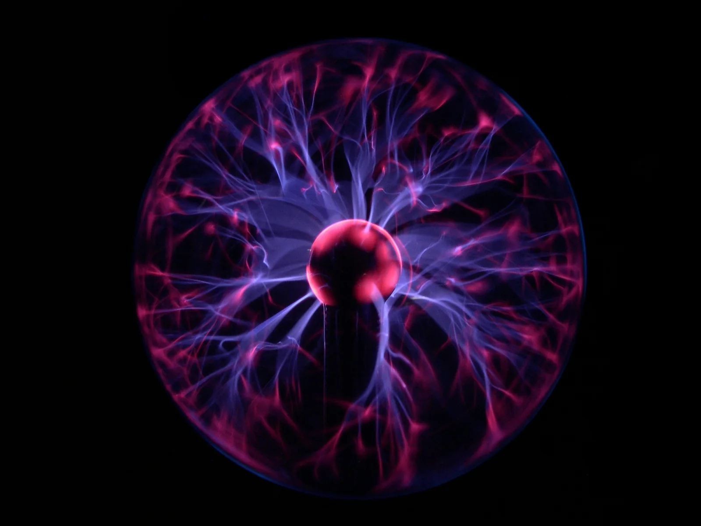

Potentiaalienergia ja potentiaali sähkökentässä
Miksi revontulissa yläilmakehään syöksyvät elektronit ovat niin nopeita, että ne saavat ilman hehkumaan?
Pohjatiedot
- Homogeenisessa kentässä voima $F = qE$ on sama kaikkialla levyjen välissä, ja $E = U : d$luku Homogeeninen sähkökenttä
- Potentiaali on kohdan jännite nollakohtaan nähden, ja jännite on kahden kohdan potentiaalieroluku Kirchhoffin lait ja potentiaali virtapiirissä
- Potentiaalienergia ja liike-energia $E_\text{k} = \tfrac{1}{2}mv^2$. Ilman kitkaa mekaaninen energia säilyy eli pysyy samanaluku Liike-energia, potentiaalienergia ja mekaaninen energia
Luvun tärkeät käsitteet Vapaaehtoinen
Tutustu luvun tärkeisiin käsitteisiin. Voit kirjoittaa niiden merkitykset sinulle vahvimmalla kielellä tai useammalla kielellä.
- Potentiaali
- Kentän kohdan ominaisuus: potentiaalienergia jaettuna varauksella. Se kertoo, kuinka paljon energiaa kohta antaa jokaista varausyksikköä kohti.
- Potentiaaliero
- Kahden kohdan potentiaalien erotus. Se on sama asia kuin kohtien välinen jännite.
- Potentiaalienergia
- Varauksen energia, joka riippuu varauksen paikasta kentässä. Kun kenttä tekee työtä, potentiaalienergia pienenee.
- Elektronivoltti
- Pieni energian yksikkö hiukkasille. Alkeisvarauksen suuruinen varaus saa sen energian, kun se kulkee yhden voltin potentiaalieron läpi.
- Tasapotentiaalipinta
- Pinta, jonka kaikissa kohdissa potentiaali on sama. Kenttä ei tee työtä, kun varaus liikkuu pintaa pitkin.
Pohdinta
Talvi-iltana Lapin taivaalla väreilee vihreä revontuliverho. Valo syntyy noin $100$–$300\,\text{km}$:n korkeudella. Siellä avaruudesta tulevat elektronit törmäävät ilman atomeihin. Ennen törmäystä elektronit ovat kulkeneet tuhansien kilometrien korkeudella muutaman kilovoltin potentiaalieron läpi. Niiden nopeus on kasvanut kymmeniin tuhansiin kilometreihin sekunnissa.
Miten pelkkä potentiaaliero voi antaa elektronille liike-energiaa, ja mikä ratkaisee, kuinka paljon energiaa elektroni saa?
Valinnainen Kertaa: työ
Ennusta
Ennuste 1: pidempi kiihdytysmatka
Lisää ennusteita 1 kysymys
Ennuste 2: elektroni ja protoni
Tutki
Simulaatio
Käyttöohje
Päästä irti vapauttaa hiukkasen levosta. Protoni ja alfahiukkanen lähtevät positiiviselta levyltä, elektroni negatiiviselta. Alkuun palauttaa hiukkasen lähtölevylle. Sama tapahtuu, kun vaihdat liukusäätimen tai hiukkasen. Harmaat katkoviivat ovat tasapotentiaalipintoja, ja niiden vieressä on potentiaali. Vihreät nuolet ovat sähkökentän $\overline{E}$ kenttäviivoja. Negatiivinen levy on nollakohta. Punainen nuoli on hiukkaseen vaikuttava voima ja sininen nuoli on hiukkasen nopeus. Harmaat pisteet näyttävät hiukkasen paikan yhtä pitkin aikavälein. Jos väli kasvaa, liike kiihtyy. Pylväät näyttävät potentiaalienergian $E_\text{p}$ ja liike-energian $E_\text{k}$ elektronivoltteina. Elektronin liike näytetään $40$ kertaa hitaampana kuin protonin ja alfahiukkasen liike. Vertaa todellisia aikoja lukemista. Nopeus muuttaa vain esityksen vauhtia.
Mallin oletukset
Levyjen välissä kenttä on homogeeninen, ja levyjen ulkopuolella kenttä on nolla. Hiukkanen lähtee levosta, ja siihen vaikuttaa vain sähköinen voima. Painovoima jätetään pois, koska se on mallin kentissä vähintään miljardeja kertoja pienempi. Levyt ovat tyhjiössä, eikä hiukkanen säteile energiaa. Nopeudet jäävät alle $7\,\%$ valon nopeudesta, joten liike-energia on $\tfrac{1}{2}mv^2$. Luvut ovat mallin laskemia arvoja, eivät mittauksia.
Laskennan selitys
Kentänvoimakkuus on $E = U : d$ ja voima $F = |q|E$, joten kiihtyvyys on vakio $a = F : m$. Ohjelma laskee liikkeen lyhyin aika-askelin vakiokiihtyvyyden kaavoilla, kunnes hiukkanen osuu toiseen levyyn. Liike-energian ohjelma laskee nopeudesta:
$$E_\text{k} = \frac{1}{2}mv^2$$
Potentiaali on $V = Ex$, kun $x$ on etäisyys negatiivisesta levystä. Potentiaalienergia on $E_\text{p} = qV$, missä elektronille $q = -e$. Energiat muunnetaan elektronivolteiksi jakamalla luvulla $1{,}602 \cdot 10^{-19}\,\text{J}$. Ohjelma ei käytä kaavaa $E_\text{k} = |q|U$. Se seuraa voimaa ja matkaa.
Valitse hiukkanen, jännite ja levyjen väli. Päästä sitten hiukkanen irti. Seuraa voimaa, nopeutta ja energiapylväitä, kun hiukkanen kulkee levystä toiseen.
Koe 1: muuta levyjen väliä
Testaa ennuste 1. Hiukkanen on protoni ja jännite on $500\,\text{V}$. Muuta vain levyjen väliä. Päästä protoni irti ja kirjaa lukemat, kun protoni on perillä. Tee mittaus ainakin kahdella välillä, esimerkiksi $2{,}5\,\text{cm}$, $5{,}0\,\text{cm}$ ja $10{,}0\,\text{cm}$. Mitkä lukemat muuttuvat ja mikä lukema ei muutu?
- Alkutila
- jännite $U$ = $500\,\text{V}$, levyjen väli $d$ = $5\,\text{cm}$, hiukkanen: protoni
- Vakiona
- jännite $U$, hiukkanen
- Muutetaan
- levyjen väli $d$
| levyjen väli $d$ | $E$ $(\text{V/m})$ | $t$ $(\text{ns})$ | $E_k$ $(\text{eV})$ |
|---|
Lisää tutkittavaa 2 tehtävää
Koe 2: vaihda hiukkasta
Testaa ennuste 2. Jännite on $500\,\text{V}$ ja levyjen väli on $5{,}0\,\text{cm}$. Vaihda vain hiukkasta. Päästä hiukkanen irti ja kirjaa lukemat, kun hiukkanen on perillä. Mittaa ainakin protoni ja elektroni, mieluiten myös alfahiukkanen, jonka varaus on $+2e$. Kumpi ratkaisee energian, varaus vai massa?
- Alkutila
- jännite $U$ = $500\,\text{V}$, levyjen väli $d$ = $5\,\text{cm}$, hiukkanen: protoni
- Vakiona
- jännite $U$, levyjen väli $d$
- Muutetaan
- hiukkanen
| hiukkanen | $E_k$ $(\text{eV})$ | $E_p$ $(\text{eV})$ | $v$ $(\text{km/s})$ |
|---|
Johtopäätös: mikä ratkaisee energian?
Kirjoita taulukoidesi perusteella: miten levyjen väli vaikuttaa kenttään, kiihdytysaikaan ja liike-energiaan, kun jännite pysyy samana? Miten protonin, elektronin ja alfahiukkasen liike-energiat ja nopeudet eroavat toisistaan, ja mistä erot johtuvat?
Mallivastaus
Kun levyjen väli kasvaa ja jännite pysyy $500\,\text{V}$:ssa, kenttä heikkenee, esimerkiksi $20\,000\,\text{V/m}$:stä $5000\,\text{V/m}$:iin. Kiihdytys kestää kauemmin, mutta protonin liike-energia on perillä aina $500\,\text{eV}$. Heikompi voima vaikuttaa pidemmän matkan, joten työ $qEd = qU$ pysyy samana. Protoni ja elektroni saavat saman $500\,\text{eV}$, koska varausten suuruus on sama. Elektroni on perillä noin $13\,000\,\text{km/s}$:n nopeudella ja protoni noin $310\,\text{km/s}$:n nopeudella, koska elektronin massa on paljon pienempi. Alfahiukkanen saa $1000\,\text{eV}$, koska sen varaus on kaksinkertainen. Energian ratkaisevat varaus ja potentiaaliero. Nopeuteen vaikuttaa lisäksi massa. Arvot ovat mallin laskemia.
Arvioi oma vastauksesi
Merkitse kohdat, jotka sinun vastauksessasi jo on.
Kertaa asia teoriasta ja harjoittele tehtävillä.
Teoria
Ydinajatus
Sähkökenttä tekee työtä kuten painovoima
Homogeenisessa sähkökentässä varattuun hiukkaseen vaikuttaa kaikkialla levyjen välissä sama voima $\overline{F} = q\overline{E}$ (luku Homogeeninen sähkökenttä). Tilanne muistuttaa painovoimaa maan pinnan lähellä. Siellä pallon paino $m\overline{g}$ on sama joka korkeudella. Kun pallo putoaa korkeudelta $h$, paino tekee työn $W = mgh$. Pallon potentiaalienergia eli paikan mukaan muuttuva energia muuttuu liike-energiaksi (luku Liike-energia, potentiaalienergia ja mekaaninen energia). Samalla tavalla toimii sähkökenttä. Positiivinen varaus $q$ kulkee positiiviselta levyltä negatiiviselle levylle kentän suuntaan matkan $d$. Silloin sähköinen voima tekee työn $W = Fd = qEd$. Voima ja siirtymä ovat samansuuntaiset, joten työ on positiivinen.
Sähköinen potentiaalienergia
Sähköinen voima on konservatiivinen kuten painovoima. Se tarkoittaa, että voiman tekemä työ riippuu vain alkukohdasta ja loppukohdasta, ei reitistä. Siksi varauksella on kentässä potentiaalienergiaa $E_\text{p}$, joka riippuu varauksen paikasta. Kun kenttä tekee positiivista työtä, potentiaalienergia pienenee saman verran. Kun varausta siirretään kentän voimaa vastaan, potentiaalienergia kasvaa. Potentiaalienergian nollatason saa valita vapaasti, kuten korkeuden nollatason. Usein nollataso on negatiivinen levy tai maadoitettu kohta. Tärkeitä ovat vain potentiaalienergian muutokset, eivätkä ne riipu nollatason valinnasta.
Potentiaali: energia varausyksikköä kohti
Kaksinkertaiseen varaukseen vaikuttaa kaksinkertainen voima, joten samassa kohdassa sillä on kaksinkertainen potentiaalienergia. Suhde $E_\text{p} : q$ ei siis riipu varauksesta. Se kuvaa kentän kohtaa. Tätä suhdetta sanotaan kohdan potentiaaliksi $V$, ja sen yksikkö on $1\,\text{J/C} = 1\,\text{V}$. Tämä on sama potentiaali kuin luvussa Kirchhoffin lait ja potentiaali virtapiirissä: kohdan jännite valittuun nollakohtaan nähden. Kahden kohdan potentiaaliero on niiden välinen jännite.
Levyjen välissä potentiaali kasvaa tasaisesti negatiivisesta levystä positiiviseen levyyn. Kun negatiivinen levy on nollakohta, positiivisen levyn potentiaali on levyjen välinen jännite $U$. Kenttä osoittaa aina suuremmasta potentiaalista pienempään. Kohdat, joilla on sama potentiaali, muodostavat tasapotentiaalipinnan. Levyjen välissä tasapotentiaalipinnat ovat levyjen suuntaisia tasoja. Kenttäviivat ovat niitä vastaan kohtisuorassa eli suorassa kulmassa. Kun varausta siirretään tasapotentiaalipintaa pitkin, kenttä ei tee työtä, koska voima on kohtisuorassa siirtymää vastaan.
Positiivinen ja negatiivinen varaus
Positiivinen varaus lähtee levosta liikkeelle kentän suuntaan eli kohti pienempää potentiaalia. Sen potentiaalienergia pienenee. Elektronin varaus on negatiivinen, $q = -e$, joten siihen vaikuttava voima osoittaa kenttää vastaan. Elektroni lähtee siis kohti suurempaa potentiaalia. Silloinkin sen potentiaalienergia pienenee, koska negatiivisen varauksen potentiaalienergia on sitä pienempi, mitä suurempi potentiaali on. Samassa $150\,\text{V}$:n kohdassa protonin potentiaalienergia on positiivinen ja elektronin negatiivinen. Kumpikin varaus lähtee levosta liikkeelle suuntaan, jossa sen potentiaalienergia pienenee, kuten pallo putoaa alaspäin.
Elektronivoltti
Hiukkasen varauksen suuruus on alkeisvaraus $e$. Kun hiukkanen kulkee potentiaalieron $U$ läpi, kenttä tekee työn $eU$. Jos vain sähköinen voima tekee työtä, hiukkasen liike-energia kasvaa saman verran. Hiukkasten energiat ilmoitetaan siksi usein elektronivoltteina ($\text{eV}$). Yksi elektronivoltti on energia, jonka alkeisvarauksen suuruinen varaus saa, kun se kulkee $1\,\text{V}$:n potentiaalieron läpi. Protoni ja elektroni kulkevat levosta $200\,\text{V}$:n potentiaalieron läpi. Kumpikin saa liike-energiaa $200\,\text{eV}$, vaikka ne liikkuvat vastakkaisiin suuntiin. Kummallakin liike-energian ja potentiaalienergian summa pysyy samana koko matkan.

Revontulet
Maan magneettikenttä ohjaa avaruudesta tulevia elektroneja napa-alueiden yläpuolelle. Tuhansien kilometrien korkeudella elektronit kulkevat usein muutaman kilovoltin potentiaalieron läpi. Jokainen voltti antaa elektronille yhden elektronivoltin liike-energiaa. Potentiaaliero $5\,\text{kV}$ antaa liike-energian $5\,\text{keV}$ ja nopeuden noin $40\,000\,\text{km/s}$. Elektronin massa on niin pieni, että jo tällainen energia antaa sille valtavan nopeuden. Noin $100$–$300\,\text{km}$:n korkeudella elektronit törmäävät ilman happi- ja typpiatomeihin ja -molekyyleihin. Elektronit luovuttavat niille energiaansa, ja atomit ja molekyylit säteilevät energian valona. Vihreä valo tulee hapesta.
Sähköinen potentiaalienergia ja potentiaali
Kohdan potentiaali on varauksen potentiaalienergia varausyksikköä kohti. Siitä saadaan varauksen potentiaalienergia kohdassa, jonka potentiaali on $V$:
- sähkökentän potentiaali
- $$V = \frac{E_\text{p}}{q}$$
- $$E_\text{p} = qV$$
Kaavassa $E_\text{p}$ on potentiaalienergia ($\text{J}$), $q$ on varaus etumerkkeineen ($\text{C}$) ja $V$ on kohdan potentiaali ($\text{V}$) valittuun nollakohtaan nähden. Elektronille $q = -e$.
Kun varaus siirtyy kohdasta $A$ kohtaan $B$, sähköinen voima tekee työn
- sähkökentän tekemä työ
- $$W_{AB} = q(V_A - V_B) = qU_{AB}$$
Kaavassa $W_{AB}$ on työ ($\text{J}$) ja $U_{AB} = V_A - V_B$ on kohtien potentiaaliero eli jännite ($\text{V}$). Työ on yhtä suuri kuin potentiaalienergian väheneminen $E_{\text{p},A} - E_{\text{p},B}$, eikä se riipu reitistä. Homogeenisessa kentässä levyjen välinen jännite on $U = Ed$ (luku Homogeeninen sähkökenttä). Siksi kentän suuntaan levystä toiseen kulkevaan varaukseen kenttä tekee työn $qU = qEd$.
Kun negatiivinen levy on nollakohta, homogeenisen kentän potentiaali on
$$V = Ex$$
Kaavassa $E$ on kentänvoimakkuus ($\text{V/m}$) ja $x$ on kohdan etäisyys negatiivisesta levystä ($\text{m}$). Kuvaaja $(x, V)$ on suora, jonka kulmakerroin on kentänvoimakkuus. Kuvan levyjen välissä potentiaali muuttuu $100\,\text{V}$ matkalla $2{,}0\,\text{cm}$, joten $E = 100\,\text{V} : 0{,}020\,\text{m} = 5000\,\text{V/m}$.
Kun vain sähköinen voima tekee työtä, liike-energian ja potentiaalienergian summa säilyy eli pysyy samana. Hiukkanen lähtee levosta ja kulkee potentiaalieron $U$ läpi. Silloin sen liike-energia on
$$\frac{1}{2}mv^2 = |q|U$$
Kaavassa $m$ on hiukkasen massa ($\text{kg}$), $v$ on sen nopeus ($\text{m/s}$) ja $|q|$ on varauksen suuruus ($\text{C}$). Painovoima jätetään huomiotta. Esimerkiksi protonin paino on kuvan kentässä kymmeniä miljardeja kertoja pienempi kuin sähköinen voima. Hiukkasen energian yksikkö elektronivoltti on
$$1\,\text{eV} = 1{,}602 \cdot 10^{-19}\,\text{J}$$
koska $$1{,}602 \cdot 10^{-19}\,\text{C} \cdot 1\,\text{V} = 1{,}602 \cdot 10^{-19}\,\text{J}\text{.}$$ Siis $1\,\text{keV} = 1000\,\text{eV}$.
Yleinen virhekäsitys
Potentiaali ja potentiaalienergia eivät ole sama asia. Potentiaali on kentän kohdan ominaisuus, eikä se riipu siitä, onko kohdassa varausta. Potentiaalienergia on varauksen energiaa. Se riippuu varauksen suuruudesta ja etumerkistä. Samassa $150\,\text{V}$:n kohdassa protonin potentiaalienergia on $+150\,\text{eV}$ ja elektronin $-150\,\text{eV}$. Siksi ei voi sanoa, että varaus liikkuu aina kohti pienempää potentiaalia. Elektroni liikkuu kohti suurempaa.
Moni ajattelee myös, että pidempi kiihdytysmatka antaa hiukkaselle enemmän energiaa. Oletetaan, että levyjen välinen jännite pysyy samana. Jos levyjen välimatka kasvaa, kenttä on heikompi, $E = U : d$, ja työ $qEd = qU$ on sama. Ratkaisevaa on potentiaaliero, ei matka. Matka vaikuttaa vain siihen, kuinka kauan kiihdytys kestää.
Tiivistelmä
- Sähköinen voima on konservatiivinen, joten varauksella on kentässä potentiaalienergiaa $E_\text{p} = qV$. Kentän tekemä työ on potentiaalienergian väheneminen.
- Potentiaali $V$ on potentiaalienergia varausyksikköä kohti, $1\,\text{V} = 1\,\text{J/C}$. Se on kentän kohdan ominaisuus. Kahden kohdan potentiaaliero on niiden välinen jännite.
- Homogeenisessa kentässä potentiaali muuttuu tasaisesti, $V = Ex$, kun negatiivinen levy on potentiaalin nollakohta ja $x$ on etäisyys siitä. Kenttä osoittaa suuremmasta potentiaalista pienempään. Tasapotentiaalipinnat ovat levyjen suuntaisia, ja kenttäviivat ovat niitä vastaan kohtisuorassa.
- Kun varaus kulkee potentiaalieron $U$ läpi, kenttä tekee työn $qU$ matkasta ja reitistä riippumatta. Levosta lähtenyt hiukkanen saa liike-energian $\tfrac{1}{2}mv^2 = |q|U$.
- Positiivinen varaus lähtee liikkeelle kohti pienempää potentiaalia ja negatiivinen kohti suurempaa. Kummankin potentiaalienergia pienenee.
- Elektronivoltti on hiukkasten energian yksikkö: $1\,\text{eV} = 1{,}602 \cdot 10^{-19}\,\text{J}$.
Valinnainen Palaa ennusteisiisi
Vertaa ennusteitasi kokeiden mallin arvoihin ja potentiaalin käsitteeseen. Palaa sen jälkeen alun kysymykseen. Mistä revontulielektroni saa liike-energiansa, ja miksi sen nopeus kasvaa niin suureksi?
Haluaisitko muuttaa ennustettasi?
Esimerkit
Esimerkki 1: Revontulielektroni
Revontulielektroni lähtee lähes levosta ja kulkee kohti suurempaa potentiaalia $3{,}0\,\text{kV}$:n potentiaalieron läpi. Kuinka suuri on elektronin liike-energia elektronivoltteina ja jouleina? Kuinka suuri on sen nopeus? Elektronin varaus on $-e$, missä $e = 1{,}602 \cdot 10^{-19}\,\text{C}$, ja massa on $m = 9{,}109 \cdot 10^{-31}\,\text{kg}$. Muut voimat kuin sähköinen voima jätetään huomiotta.
Vaihe 1/7
Tunnetut ja kysytty. $U = 3{,}0\,\text{kV}$, $e = 1{,}602 \cdot 10^{-19}\,\text{C}$, $m = 9{,}109 \cdot 10^{-31}\,\text{kg}$ ja alkunopeus nolla.
Kysytään liike-energiaa $E_\text{k}$ elektronivoltteina ja jouleina sekä nopeutta $v$.
Vaihe 2/7
Periaate. Vain sähköinen voima tekee työtä, joten liike-energian ja potentiaalienergian summa säilyy. Elektroni kulkee kohti suurempaa potentiaalia. Sen potentiaalienergia pienenee määrän $eU$, ja liike-energia kasvaa saman verran. Jokainen voltti antaa elektronille yhden elektronivoltin.
Vaihe 3/7
Kaava ratkaistuna. $$\begin{aligned} \tfrac{1}{2}mv^2 &= eU \\ E_\text{k} &= eU \\ v &= \sqrt{\frac{2eU}{m}} \end{aligned}$$
Vaihe 4/7
Yksikkömuunnokset.
Lisäksi $1\,\text{C} \cdot 1\,\text{V} = 1\,\text{J}$ ja $\sqrt{1\,\text{J} : 1\,\text{kg}} = 1\,\text{m/s}$.
Vaihe 5/7
Sijoitus. $$\begin{aligned} E_\text{k} &= eU \\ &= 1{,}602 \cdot 10^{-19}\,\text{C} \cdot 3000\,\text{V} \\ &= 4{,}806 \cdot 10^{-16}\,\text{J} \\ v &= \sqrt{\frac{2E_\text{k}}{m}} \\ &= \sqrt{\frac{2 \cdot 4{,}806 \cdot 10^{-16}\,\text{J}}{9{,}109 \cdot 10^{-31}\,\text{kg}}} \\ &= 3{,}248 \cdot 10^{7}\,\text{m/s} \end{aligned}$$
Vaihe 6/7
Tulos. Elektronin liike-energia on $3{,}0\,\text{keV}$ eli $4{,}8 \cdot 10^{-16}\,\text{J}$, ja sen nopeus on $3{,}2 \cdot 10^{7}\,\text{m/s}$. Tulokset ilmoitetaan kahdella merkitsevällä numerolla kuten potentiaaliero $3{,}0\,\text{kV}$.
Vaihe 7/7
Järkevyys. Pyöristetyillä luvuilla
joten suuruusluokka on oikea. Nopeus on noin $11\,\%$ valon nopeudesta $3{,}00 \cdot 10^{8}\,\text{m/s}$. Se jää selvästi valon nopeuden alle, joten lauseke $\tfrac{1}{2}mv^2$ antaa vielä hyvän tuloksen.
Esimerkki 2: Etsi virhe
Esimerkki 3: Sovella uuteen tilanteeseen
Satelliitin ionimoottori kiihdyttää ksenonioneja ja työntää satelliittia ionien reaktiovoimalla. Jokaisen ionin varaus on $+e$ ja massa on $2{,}18 \cdot 10^{-25}\,\text{kg}$. Ionit lähtevät lähes levosta, ja ne kiihdytetään $1{,}2\,\text{kV}$:n potentiaalieron läpi. Alkeisvaraus on $e = 1{,}602 \cdot 10^{-19}\,\text{C}$.
Kuinka suuri on ionien nopeus? Vastaa kilometreinä sekunnissa.
Vihje 1: ohjaava kysymys
Mihin energiamuotoon energia muuttuu, kun kenttä tekee työtä ioniin? Kuinka suuri on kentän tekemä työ?
Vihje 2: mikä yhteys
Ionin liike-energia on $\tfrac{1}{2}mv^2 = eU$. Muunna ensin $1{,}2\,\text{kV} = 1200\,\text{V}$.
Vihje 3: välivaihe
Muunna lopuksi $1\,\text{km/s} = 1000\,\text{m/s}$.
Näytä ratkaisu
Annettu
ionin varaus $q = e = 1{,}602 \cdot 10^{-19}\,\text{C}$, massa $m = 2{,}18 \cdot 10^{-25}\,\text{kg}$, potentiaaliero $U = 1{,}2\,\text{kV}$, alkunopeus lähes nolla
Kysytty
ionien nopeus $v$ kilometreinä sekunnissa
Periaate
Kiihdytyksessä vain sähköinen voima tekee ioniin työtä. Ionin potentiaalienergia pienenee määrän $eU$, ja liike-energia kasvaa saman verran. Ioni lähtee lähes levosta, joten koko liike-energia tulee kentän työstä.
Kaava
$\tfrac{1}{2}mv^2 = eU$, josta $v = \sqrt{\dfrac{2eU}{m}}$
Muunnokset
ja lopuksi $1\,\text{km/s} = 1000\,\text{m/s}$.
Sijoitus
$$\begin{aligned} v &= \sqrt{\dfrac{2 \cdot 1{,}602 \cdot 10^{-19}\,\text{C} \cdot 1200\,\text{V}}{2{,}18 \cdot 10^{-25}\,\text{kg}}} \\ &= 4{,}20 \cdot 10^{4}\,\text{m/s} \\ &= 42{,}0\,\text{km/s} \end{aligned}$$$$\begin{aligned} &v \\ &= \sqrt{\dfrac{2 \cdot 1{,}602 \cdot 10^{-19}\,\text{C} \cdot 1200\,\text{V}}{2{,}18 \cdot 10^{-25}\,\text{kg}}} \\ &= 4{,}20 \cdot 10^{4}\,\text{m/s} \\ &= 42{,}0\,\text{km/s} \end{aligned}$$
Vastaus
$42\,\text{km/s}$
Vastauksessa on kaksi merkitsevää numeroa kuten jännitteessä $1{,}2\,\text{kV}$.
Järkevyys
Pyöristetyillä luvuilla
Ksenonioni on noin $240\,000$ kertaa elektronia raskaampi, joten se on paljon hitaampi kuin esimerkin revontulielektroni, vaikka energiat ovat samaa suuruusluokkaa. Silti ioni on noin kymmenen kertaa nopeampi kuin raketin palokaasut.
Kertaa luvun käsitteet
Jos valitset Kertaa myöhemmin, kortti menee kertauspakkaasi.
- Potentiaalienergia
- Varauksen paikasta sähkökentässä riippuva energia, joka pienenee, kun kenttä tekee varaukseen positiivista työtä.$$E_\text{p} = qV$$
- Potentiaali
- Sähkökentän kohdan ominaisuus: varauksen potentiaalienergia varausyksikköä kohti, yksikkö $1\,\text{V} = 1\,\text{J/C}$.$$V = \dfrac{E_\text{p}}{q}$$
- Potentiaaliero
- Kahden kohdan potentiaalien erotus eli niiden välinen jännite; kenttä tekee varaukseen työn $qU$ reitistä riippumatta.$$W_{AB} = q(V_A - V_B) = qU_{AB}$$
- Tasapotentiaalipinta
- Pinta, jonka kaikissa kohdissa potentiaali on sama; kenttäviivat ovat sitä vastaan kohtisuorassa.
- Elektronivoltti
- Energia, jonka alkeisvarauksen suuruinen varaus saa kulkiessaan $1\,\text{V}$:n potentiaalieron läpi.$$1\,\text{eV} = 1{,}602 \cdot 10^{-19}\,\text{J}$$
Tehtävät
- Tehtävä 12-4YdintehtäväPerus
Varaus $4{,}0\,\mu\text{C}$ siirtyy sähkökentässä kohdasta $A$ kohtaan $B$. Kohdan $A$ potentiaali on $60\,\text{V}$ ja kohdan $B$ potentiaali on $15\,\text{V}$. Kuinka suuren työn sähkökenttä tekee varaukseen? Vastaa millijouleina.
Vastaus
$0{,}18\,\text{mJ}$
Näytä ratkaisu
Annettu
$q = 4{,}0\,\mu\text{C}$, $V_A = 60\,\text{V}$, $V_B = 15\,\text{V}$
Kysytty
sähkökentän tekemä työ $W_{AB}$ millijouleina
Periaate
Sähköinen voima on konservatiivinen eli sen työ ei riipu reitistä. Työ riippuu vain alku- ja loppukohdan potentiaaleista: työ on varaus kertaa potentiaaliero. Positiivinen varaus siirtyy pienempään potentiaaliin, joten työ on positiivinen.
Kaava
$W_{AB} = q(V_A - V_B)$
Muunnokset
$q$$= 4{,}0\,\mu\text{C}$$= 4{,}0 \cdot 10^{-6}\,\text{C}$ja lopuksi $1\,\text{J} = 1000\,\text{mJ}$.
Sijoitus
$W_{AB}$$= 4{,}0 \cdot 10^{-6}\,\text{C} \cdot (60\,\text{V} - 15\,\text{V})$$= 1{,}8 \cdot 10^{-4}\,\text{J}$$= 0{,}18\,\text{mJ}$Vastaus
$0{,}18\,\text{mJ}$
Vastauksessa on kaksi merkitsevää numeroa kuten varauksessa $4{,}0\,\mu\text{C}$.
Järkevyys
Potentiaaliero on $45\,\text{V}$, ja $$4 \cdot 10^{-6}\,\text{C} \cdot 50\,\text{V} = 2 \cdot 10^{-4}\,\text{J}$$ on lähellä tulosta. Työ on positiivinen, koska varauksen potentiaalienergia pienenee, kun se siirtyy pienempään potentiaaliin.
- Tehtävä 12-6YdintehtäväPerus
Tasaisessa sähkökentässä on kaksi pientä kappaletta. Toisen varaus on $+q$ ja toisen $-q$. Kumpikin siirtyy saman matkan kentän suuntaan. Mitä niiden sähköiselle potentiaalienergialle tapahtuu?
Vastaus
Positiivisen varauksen potentiaalienergia pienenee ja negatiivisen kasvaa, koska potentiaali laskee kentän suuntaan.
Näytä ratkaisu
Kysytty
miten positiivisen ja negatiivisen varauksen sähköinen potentiaalienergia muuttuu, kun kumpikin siirtyy saman matkan kentän suuntaan.
Periaate
Sähkökenttä osoittaa suuremmasta potentiaalista pienempään. Kun siirrytään kentän suuntaan, potentiaali $V$ pienenee. Varauksen potentiaalienergia on $E_\text{p} = qV$. Siksi muutoksen etumerkki riippuu myös varauksen etumerkistä.
Mallivastaus
Positiivisen varauksen potentiaalienergia pienenee ja negatiivisen kasvaa, koska potentiaali laskee kentän suuntaan. Kun $q$ on positiivinen, pienempi $V$ tarkoittaa pienempää tuloa $qV$. Kun $q$ on negatiivinen, tulo on suurempi eli vähemmän negatiivinen. Kenttä tekee positiiviseen varaukseen positiivisen työn ja negatiiviseen negatiivisen työn.
Työ on yhtä suuri kuin potentiaalienergian väheneminen. Väite, että kummankin energia pienenee, unohtaa varauksen etumerkin. Väite, että energia pysyy samana, unohtaa, että potentiaali muuttuu tasaisesti matkan mukana. Väite, että positiivisen energia kasvaa, kääntää potentiaalin suunnan väärin päin.
Järkevyys
Esimerkiksi kun potentiaali laskee $100\,\text{V}$, varauksen $+e$ energia muuttuu $-100\,\text{eV}$ ja varauksen $-e$ energia $+100\,\text{eV}$. Muutokset ovat yhtä suuret mutta vastakkaiset.
- Tehtävä 12-8YdintehtäväPerus
Kaksinkertaisesti positiivinen ioni, jonka varaus on $+2e$, lähtee levosta ja kulkee $450\,\text{V}$:n potentiaalieron läpi. Kuinka suuri liike-energia ionilla on lopuksi? Ioniin vaikuttaa vain sähköinen voima. Vastaa elektronivoltteina.
Vastaus
$900\,\text{eV}$
Näytä ratkaisu
Annettu
ionin varaus $q = +2e$, potentiaaliero $U = 450\,\text{V}$, alkunopeus nolla
Kysytty
liike-energia $E_\text{k}$ elektronivoltteina
Periaate
Vain sähköinen voima tekee työtä. Siksi liike-energia on yhtä suuri kuin kentän tekemä työ $qU$. Elektronivoltti on energia, jonka varaus $e$ saa, kun se kulkee $1\,\text{V}$:n potentiaalieron läpi. Kaksinkertainen varaus saa siis kaksinkertaisen energian.
Kaava
$E_\text{k} = qU = 2eU$
Muunnokset
Ei tarvita: kun varaus ilmoitetaan alkeisvarauksen $e$ monikertana, energia saadaan suoraan elektronivoltteina, $1\,\text{eV} = e \cdot 1\,\text{V}$.
Sijoitus
$E_\text{k}$$= 2e \cdot 450\,\text{V}$$= 900\,\text{eV}$Vastaus
$900\,\text{eV}$
Tuloksessa on kolme merkitsevää numeroa, kuten jännitteessä $450\,\text{V}$.
Järkevyys
Ioni, jonka varaus on $+e$, saisi samassa jännitteessä $450\,\text{eV}$. Kaksinkertainen varaus antaa kaksinkertaisen energian. Jouleina tulos on
$900 \cdot 1{,}602 \cdot 10^{-19}\,\text{J}$$\approx 1{,}4 \cdot 10^{-16}\,\text{J}$$900 \cdot 1{,}602 \cdot 10^{-19}\,\text{J}$$\approx 1{,}4 \cdot 10^{-16}\,\text{J}$ - Tehtävä 12-11YdintehtäväSoveltava
Alfahiukkasen varaus on $+2e$ ja massa on $6{,}645 \cdot 10^{-27}\,\text{kg}$. Alfahiukkanen lähtee levosta ja kulkee $2{,}0\,\text{kV}$:n potentiaalieron läpi. Kuinka suuri on sen nopeus? Alkeisvaraus on $e = 1{,}602 \cdot 10^{-19}\,\text{C}$. Vastaa metreinä sekunnissa.
Vastaus
$4{,}4 \cdot 10^{5}\,\text{m/s}$
Näytä ratkaisu
Annettu
varaus $q = 2e$, $e = 1{,}602 \cdot 10^{-19}\,\text{C}$, massa $m = 6{,}645 \cdot 10^{-27}\,\text{kg}$, potentiaaliero $U = 2{,}0\,\text{kV}$, alkunopeus nolla
Kysytty
nopeus $v$ metreinä sekunnissa
Periaate
Vain sähköinen voima tekee työtä, joten potentiaalienergia muuttuu liike-energiaksi: kenttä tekee työn $qU$, ja levosta lähtenyt hiukkanen saa yhtä suuren liike-energian. Alfahiukkasen varaus on kaksinkertainen, joten se saa kaksinkertaisen energian protoniin verrattuna.
Kaava
$\tfrac{1}{2}mv^2 = qU = 2eU$, josta $v = \sqrt{\dfrac{4eU}{m}}$
Muunnokset
$U$$= 2{,}0\,\text{kV}$$= 2{,}0 \cdot 1000\,\text{V}$$= 2000\,\text{V}$Sijoitus
$v$$= \sqrt{\dfrac{4 \cdot 1{,}602 \cdot 10^{-19}\,\text{C} \cdot 2000\,\text{V}}{6{,}645 \cdot 10^{-27}\,\text{kg}}}$$= 4{,}392 \cdot 10^{5}\,\text{m/s}$Vastaus
$4{,}4 \cdot 10^{5}\,\text{m/s}$
Vastauksessa on kaksi merkitsevää numeroa kuten jännitteessä $2{,}0\,\text{kV}$.
Järkevyys
Liike-energia on $4000\,\text{eV} \approx 6{,}4 \cdot 10^{-16}\,\text{J}$, ja $$\begin{aligned} v^2 &\approx 2 \cdot 6 \cdot 10^{-16}\,\text{J} : (7 \cdot 10^{-27}\,\text{kg}) \\ &\approx 2 \cdot 10^{11}\,\text{m}^2/\text{s}^2\text{,} \end{aligned}$$$$\begin{aligned} v^2 &\approx 2 \cdot 6 \cdot 10^{-16}\,\text{J} \\ &: (7 \cdot 10^{-27}\,\text{kg}) \\ &\approx 2 \cdot 10^{11}\,\text{m}^2/\text{s}^2\text{,} \end{aligned}$$ joten $v \approx 4 \cdot 10^{5}\,\text{m/s}$. Nopeus on paljon pienempi kuin valon nopeus, joten lauseke $\tfrac{1}{2}mv^2$ sopii.
Taso 1 · perusharjoitus 5 tehtävää
- Tehtävä 12-1
Protoni kulkee kahden levyn välissä positiiviselta levyltä negatiiviselle. Levyjen välinen jännite on $240\,\text{V}$. Kuinka suuren työn sähkökenttä tekee protonille? Alkeisvaraus on $e = 1{,}602 \cdot 10^{-19}\,\text{C}$. Vastaa jouleina.
Vastaus
$3{,}84 \cdot 10^{-17}\,\text{J}$
Näytä ratkaisu
Annettu
protonin varaus $q = e = 1{,}602 \cdot 10^{-19}\,\text{C}$, levyjen välinen jännite $U = 240\,\text{V}$
Kysytty
sähkökentän protoniin tekemä työ $W$ jouleina
Periaate
Kun varaus siirtyy potentiaalieron $U$ läpi, sähkökenttä tekee työn $qU$. Protoni on positiivinen ja kulkee positiiviselta levyltä negatiiviselle eli kohti pienempää potentiaalia. Siksi työ on positiivinen.
Kaava
$W = qU$, missä $q = e$, joten $W = eU$
Muunnokset
Ei tarvita: $1\,\text{C} \cdot 1\,\text{V} = 1\,\text{J}$.
Sijoitus
$W$$= 1{,}602 \cdot 10^{-19}\,\text{C} \cdot 240\,\text{V}$$= 3{,}845 \cdot 10^{-17}\,\text{J}$Vastaus
$3{,}84 \cdot 10^{-17}\,\text{J}$
Vastauksessa on kolme merkitsevää numeroa kuten jännitteessä $240\,\text{V}$.
Järkevyys
Elektronivoltteina työ on $240\,\text{eV}$, ja $$\begin{aligned} 240 \cdot 1{,}6 \cdot 10^{-19}\,\text{J} &\approx 3{,}8 \cdot 10^{-17}\,\text{J}\text{.} \end{aligned}$$$$\begin{aligned} &240 \cdot 1{,}6 \cdot 10^{-19}\,\text{J} \\ &\approx 3{,}8 \cdot 10^{-17}\,\text{J}\text{.} \end{aligned}$$ Yhden hiukkasen energia on hyvin pieni joulemäärä, kuten pitääkin.
- Tehtävä 12-2
Pienen pallon varaus on $+3{,}0\,\text{nC}$. Pallo on sähkökentän kohdassa, jonka potentiaali on $120\,\text{V}$ nollakohtaan nähden. Kuinka suuri on pallon sähköinen potentiaalienergia? Vastaa mikrojouleina.
Vastaus
$0{,}36\,\mu\text{J}$
Näytä ratkaisu
Annettu
varaus $q = +3{,}0\,\text{nC}$, kohdan potentiaali $V = 120\,\text{V}$
Kysytty
potentiaalienergia $E_\text{p}$ mikrojouleina
Periaate
Potentiaali on potentiaalienergia varausyksikköä kohti, joten varauksen potentiaalienergia on varaus kertaa kohdan potentiaali. Varaus on positiivinen ja potentiaali positiivinen, joten potentiaalienergia on positiivinen.
Kaava
$E_\text{p} = qV$
Muunnokset
$q$$= 3{,}0\,\text{nC}$$= 3{,}0 \cdot 10^{-9}\,\text{C}$ja lopuksi $1\,\text{J} = 10^{6}\,\mu\text{J}$.
Sijoitus
$E_\text{p}$$= 3{,}0 \cdot 10^{-9}\,\text{C} \cdot 120\,\text{V}$$= 3{,}6 \cdot 10^{-7}\,\text{J}$$= 0{,}36\,\mu\text{J}$Vastaus
$0{,}36\,\mu\text{J}$
Vastauksessa on kaksi merkitsevää numeroa kuten varauksessa $3{,}0\,\text{nC}$.
Järkevyys
Arvio $$\begin{aligned} 3 \cdot 10^{-9}\,\text{C} \cdot 100\,\text{V} &= 3 \cdot 10^{-7}\,\text{J} \end{aligned}$$$$\begin{aligned} &3 \cdot 10^{-9}\,\text{C} \cdot 100\,\text{V} \\ &= 3 \cdot 10^{-7}\,\text{J} \end{aligned}$$ on lähellä tulosta. Kaksinkertainen varaus antaisi samassa kohdassa kaksinkertaisen potentiaalienergian, kuten kaavasta näkyy.
- Tehtävä 12-3
Revontulia synnyttävän elektronin liike-energia on $5{,}0\,\text{keV}$. Muuta energia jouleiksi. Kuinka suuri liike-energia on jouleina? Alkeisvaraus on $e = 1{,}602 \cdot 10^{-19}\,\text{C}$.
Vastaus
$8{,}0 \cdot 10^{-16}\,\text{J}$
Näytä ratkaisu
Annettu
liike-energia $E_\text{k} = 5{,}0\,\text{keV}$, $e = 1{,}602 \cdot 10^{-19}\,\text{C}$
Kysytty
liike-energia jouleina
Periaate
Elektronivoltti on energia, jonka alkeisvarauksen suuruinen varaus saa, kun se kulkee $1\,\text{V}$:n potentiaalieron läpi. Siis $1\,\text{eV} = e \cdot 1\,\text{V}$. Energia jouleina saadaan kertomalla elektronivolttien määrä tällä luvulla.
Kaava
$E_\text{k} = N \cdot 1\,\text{eV}$, missä $N$ on elektronivolttien määrä ja $1\,\text{eV} = 1{,}602 \cdot 10^{-19}\,\text{J}$
Muunnokset
$5{,}0\,\text{keV}$$= 5{,}0 \cdot 1000\,\text{eV}$$= 5000\,\text{eV}$Sijoitus
$E_\text{k}$$= 5000 \cdot 1{,}602 \cdot 10^{-19}\,\text{J}$$= 8{,}01 \cdot 10^{-16}\,\text{J}$Vastaus
$8{,}0 \cdot 10^{-16}\,\text{J}$
Vastauksessa on kaksi merkitsevää numeroa kuten energiassa $5{,}0\,\text{keV}$.
Järkevyys
Tuhat elektronivolttia on noin $1{,}6 \cdot 10^{-16}\,\text{J}$, ja viisi kertaa se on $8 \cdot 10^{-16}\,\text{J}$. Joulemäärä on pieni, koska kyse on yhdestä elektronista.
- Tehtävä 12-5
Kuvaajassa on kahden yhdensuuntaisen levyn välisen homogeenisen kentän potentiaali. Kuvaajassa $x$ on etäisyys negatiivisesta levystä. Protoni siirtyy kohdasta $x = 4{,}0\,\text{cm}$ kohtaan $x = 1{,}0\,\text{cm}$, ja siihen vaikuttaa vain sähköinen voima.
Kuinka paljon protonin liike-energia kasvaa? Lue tarvittavat arvot kuvaajasta ja vastaa elektronivoltteina.
Vastaus
$150\,\text{eV}$
Näytä ratkaisu
Annettu
kuvaajan potentiaali $V$ levyjen välissä; protoni siirtyy kohdasta $x = 4{,}0\,\text{cm}$ kohtaan $x = 1{,}0\,\text{cm}$; vain sähköinen voima tekee työtä
Kysytty
liike-energian kasvu $\Delta E_\text{k}$ elektronivoltteina
Periaate
Kun vain sähköinen voima tekee työtä, liike-energia kasvaa yhtä paljon kuin potentiaalienergia pienenee. Protonin varaus on $e$. Jokainen voltti, jonka verran potentiaali laskee, antaa protonille yhden elektronivoltin liike-energiaa.
Kuvaajan lukeminen
Kohdassa $x = 4{,}0\,\text{cm}$ suora on $200\,\text{V}$:n ruudukkoviivalla ja kohdassa $x = 1{,}0\,\text{cm}$ $50\,\text{V}$:n ruudukkoviivalla. Potentiaali siis laskee siirtymän aikana.
Kaava
$\Delta E_\text{k}$$= -\Delta E_\text{p}$$= e(V_1 - V_2)$missä $V_1 = V(4{,}0\,\text{cm})$ ja $V_2 = V(1{,}0\,\text{cm})$
Muunnokset
Ei tarvita: kun varaus on $e$ ja potentiaaliero voltteina, energia saadaan suoraan elektronivoltteina.
Sijoitus
$\Delta E_\text{k}$$= e \cdot (200\,\text{V} - 50\,\text{V})$$= 150\,\text{eV}$Vastaus
$150\,\text{eV}$
Tuloksessa on kaksi merkitsevää numeroa. Potentiaalit luetaan $50\,\text{V}$:n ruudukkoviivoilta, ja paikat on annettu kahden merkitsevän numeron tarkkuudella.
Järkevyys
Kuvaajan kulmakerroin on $50\,\text{V}$ senttimetriä kohti, ja $3{,}0\,\text{cm}$:n matkalla potentiaali muuttuu $150\,\text{V}$. Protoni liikkuu kohti negatiivista levyä eli kentän suuntaan, joten sen liike-energia kasvaa, kuten positiiviselle varaukselle kuuluu.
- Tehtävä 12-7
Kahden yhdensuuntaisen levyn välinen jännite on $200\,\text{V}$. Aluksi nollakohdaksi valitaan negatiivinen levy, joten positiivisen levyn potentiaali on $+200\,\text{V}$. Sen jälkeen nollakohdaksi valitaankin positiivinen levy.
Mikä väite on tämän jälkeen oikein?
Vastaus
Negatiivisen levyn potentiaali on $-200\,\text{V}$, ja jännite on edelleen $200\,\text{V}$, koska jännite on potentiaalien erotus.
Näytä ratkaisu
Kysytty
mikä väite on oikein, kun potentiaalin nollakohta siirretään negatiiviselta levyltä positiiviselle.
Periaate
Potentiaali kertoo jännitteen valittuun nollakohtaan nähden. Siksi potentiaali muuttuu, kun nollakohta siirtyy. Jännite on kahden kohdan potentiaalien erotus. Jos kumpaakin potentiaalia siirretään yhtä paljon, erotus ei muutu.
Mallivastaus
Negatiivisen levyn potentiaali on $-200\,\text{V}$, ja jännite on edelleen $200\,\text{V}$, koska jännite on potentiaalien erotus: $0\,\text{V} - (-200\,\text{V}) = 200\,\text{V}$. Positiivisen levyn potentiaali on nyt $0\,\text{V}$. Potentiaali ei siis ole levyn oma ominaisuus, vaan se riippuu nollakohdan valinnasta. Jännite ei ole nolla eikä negatiivinen.
Kenttä on ennallaan, koska nollakohdan siirto muuttaa kaikkia potentiaaleja yhtä paljon. Kenttä osoittaa edelleen positiiviselta levyltä negatiiviselle.
Järkevyys
Ennen siirtoa erotus oli $200\,\text{V} - 0\,\text{V} = 200\,\text{V}$. Siirron jälkeen se on $0\,\text{V} - (-200\,\text{V}) = 200\,\text{V}$. Jännite on siis sama.
Taso 2 · soveltava harjoitus 8 tehtävää
- Tehtävä 12-9
Homogeenisen sähkökentän voimakkuus on $2{,}5\,\text{kV/m}$. Protoni siirtyy kentässä $3{,}0\,\text{cm}$ kentän suuntaan. Kuinka paljon protonin potentiaalienergia muuttuu? Vastaa elektronivoltteina etumerkkeineen eli plus- tai miinusmerkin kanssa (negatiivinen, jos energia pienenee).
Vastaus
$-75\,\text{eV}$
Näytä ratkaisu
Annettu
kentänvoimakkuus $E = 2{,}5\,\text{kV/m}$, siirtymä kentän suuntaan $s = 3{,}0\,\text{cm}$, protonin varaus $e$
Kysytty
potentiaalienergian muutos $\Delta E_\text{p}$ elektronivoltteina etumerkkeineen
Periaate
Homogeenisessa kentässä potentiaali muuttuu tasaisesti, ja kentän suuntaan se pienenee määrän $Es$. Protonin potentiaalienergia on $eV$, joten se pienenee yhtä monta elektronivolttia kuin potentiaali pienenee voltteja.
Kaava
$\Delta V = -Es$ ja $\Delta E_\text{p} = e\Delta V$, joten $\Delta E_\text{p} = -eEs$
Muunnokset
$E$$= 2{,}5\,\text{kV/m}$$= 2{,}5 \cdot 1000\,\text{V/m}$$= 2500\,\text{V/m}$$s$$= 3{,}0\,\text{cm}$$= 3{,}0 \cdot 0{,}01\,\text{m}$$= 0{,}030\,\text{m}$Sijoitus
$\Delta V$$= -2500\,\text{V/m} \cdot 0{,}030\,\text{m}$$= -75\,\text{V}$$\Delta E_\text{p}$$= e \cdot (-75\,\text{V})$$= -75\,\text{eV}$Vastaus
$-75\,\text{eV}$
Vastauksessa on kaksi merkitsevää numeroa kuten kentänvoimakkuudessa ja matkassa.
Järkevyys
Positiivinen varaus liikkuu itsestään kentän suuntaan, ja silloin sen potentiaalienergia pienenee, joten etumerkki on oikea. Jouleina muutos on
$-75 \cdot 1{,}602 \cdot 10^{-19}\,\text{J}$$\approx -1{,}2 \cdot 10^{-17}\,\text{J}$$-75 \cdot 1{,}602 \cdot 10^{-19}\,\text{J}$$\approx -1{,}2 \cdot 10^{-17}\,\text{J}$mikä vastaa kentän työtä $eEs$.
- Tehtävä 12-10
Kahden yhdensuuntaisen levyn väli on $2{,}0\,\text{cm}$, ja niiden välinen jännite on $300\,\text{V}$. Negatiivinen levy on nollakohta. Kohta $P$ on levyjen välissä $0{,}80\,\text{cm}$:n päässä negatiivisesta levystä.
Kuinka suuri on kohdassa $P$ olevan elektronin potentiaalienergia? Vastaa elektronivoltteina etumerkkeineen eli plus- tai miinusmerkin kanssa.
Vastaus
$-120\,\text{eV}$
Näytä ratkaisu
Annettu
levyjen väli $d = 2{,}0\,\text{cm}$, jännite $U = 300\,\text{V}$, kohdan $P$ etäisyys negatiivisesta levystä $x = 0{,}80\,\text{cm}$; negatiivinen levy on nollakohta; elektronin varaus $-e$
Kysytty
elektronin potentiaalienergia $E_\text{p}$ kohdassa $P$ elektronivoltteina
Periaate
Homogeenisessa kentässä potentiaali kasvaa tasaisesti negatiivisesta levystä positiiviseen, $V = Ex$, missä $E = U : d$. Elektronin varaus on negatiivinen, joten sen potentiaalienergia $E_\text{p} = -eV$ on negatiivinen kohdassa, jonka potentiaali on positiivinen.
Kaava
$V_P = Ex = \dfrac{U}{d}\,x$ ja $E_\text{p} = -eV_P$, joten $E_\text{p} = -e\,\dfrac{Ux}{d}$
Muunnokset
Ei tarvita: senttimetrit supistuvat suhteessa $x : d$, ja varauksella $e$ potentiaali voltteina antaa energian elektronivoltteina.
Sijoitus
$V_P$$= 300\,\text{V} \cdot \dfrac{0{,}80\,\text{cm}}{2{,}0\,\text{cm}}$$= 120\,\text{V}$$E_\text{p}$$= -e \cdot 120\,\text{V}$$= -120\,\text{eV}$Vastaus
$-120\,\text{eV}$
Eli $-1{,}2 \cdot 10^{2}\,\text{eV}$. Vastauksessa on kaksi merkitsevää numeroa kuten etäisyyksissä.
Järkevyys
Kohta $P$ on $40\,\%$ matkasta negatiivisesta levystä, joten sen potentiaali on $40\,\%$ jännitteestä $300\,\text{V}$. Elektroni pyrkii kohti positiivista levyä. Siellä sen potentiaalienergia olisi vielä pienempi, $-300\,\text{eV}$.
- Tehtävä 12-12
Elektronitykissä elektronit lähtevät levosta, ja jännite kiihdyttää ne. Kuinka suuri jännite tarvitaan, jotta elektronin nopeus on $1{,}0 \cdot 10^{7}\,\text{m/s}$? Vastaa voltteina. Elektronin massa on $9{,}109 \cdot 10^{-31}\,\text{kg}$. Alkeisvaraus on $e = 1{,}602 \cdot 10^{-19}\,\text{C}$.
Vastaus
$2{,}8 \cdot 10^{2}\,\text{V}$
Näytä ratkaisu
Annettu
loppunopeus $v = 1{,}0 \cdot 10^{7}\,\text{m/s}$, alkunopeus nolla, $m = 9{,}109 \cdot 10^{-31}\,\text{kg}$, $e = 1{,}602 \cdot 10^{-19}\,\text{C}$
Kysytty
kiihdytysjännite $U$ voltteina
Periaate
Vain sähköinen voima tekee työtä, joten elektronin saama liike-energia on yhtä suuri kuin kentän tekemä työ $eU$. Liike-energian saa laskettua nopeudesta. Jännite saadaan ratkaisemalla se energiayhtälöstä.
Kaava
$\tfrac{1}{2}mv^2 = eU$, josta $U = \dfrac{mv^2}{2e}$
Muunnokset
Ei tarvita: $1\,\text{kg} \cdot 1\,\text{m}^2/\text{s}^2 = 1\,\text{J}$ ja $1\,\text{J} : 1\,\text{C} = 1\,\text{V}$.
Sijoitus
$$\begin{aligned} mv^2 &= 9{,}109 \cdot 10^{-31}\,\text{kg} \cdot (1{,}0 \cdot 10^{7}\,\text{m/s})^2 \\ &= 9{,}109 \cdot 10^{-17}\,\text{J} \end{aligned}$$$$\begin{aligned} mv^2 &= 9{,}109 \cdot 10^{-31}\,\text{kg} \\ &\cdot (1{,}0 \cdot 10^{7}\,\text{m/s})^2 \\ &= 9{,}109 \cdot 10^{-17}\,\text{J} \end{aligned}$$ ja
$U$$= \dfrac{9{,}109 \cdot 10^{-17}\,\text{J}}{2 \cdot 1{,}602 \cdot 10^{-19}\,\text{C}}$$= 284{,}3\,\text{V}$Vastaus
$2{,}8 \cdot 10^{2}\,\text{V}$
Eli noin $280\,\text{V}$. Vastauksessa on kaksi merkitsevää numeroa kuten nopeudessa.
Järkevyys
Liike-energia on
$\tfrac{1}{2} \cdot 9{,}1 \cdot 10^{-31}\,\text{kg} \cdot 10^{14}\,\text{m}^2/\text{s}^2$$\approx 4{,}6 \cdot 10^{-17}\,\text{J}$$\approx 280\,\text{eV}$joten tarvitaan noin $280\,\text{V}$. Jo muutaman sadan voltin jännite antaa kevyelle elektronille suuren nopeuden.
- Tehtävä 12-13
Kahden yhdensuuntaisen levyn väli on $d = 6{,}0\,\text{cm}$. Levyjen välistä mitataan potentiaali eri etäisyyksillä $x$ negatiivisesta levystä. Negatiivinen levy on nollakohta. Taulukon arvot ovat esimerkkiaineistoa, ja niissä on pientä mittaushajontaa.
a) Sovita mittapisteisiin suora, joka kulkee origon kautta. Laske suoran kulmakertoimesta kentänvoimakkuus $E$ yksikössä $\text{V/m}$. Voit käyttää pienimmän neliösumman menetelmää tai lukea suoralta yhden pisteen.
b) Päättele levyjen välinen jännite $U$.
Vastauslaatikkoon tulee kohdan b) tulos voltteina.
Potentiaali $x\,(\text{cm})$ $V\,(\text{V})$ 1,0 5,2 2,0 9,7 3,0 15,4 4,0 19,6 5,0 25,3 Vastaus
$U \approx 30\,\text{V}$
Näytä ratkaisu
Annettu
levyjen väli $d = 6{,}0\,\text{cm}$; taulukon pisteet $(x, V)$; negatiivinen levy on nollakohta, joten $V = 0$ kohdassa $x = 0$
Kysytty
kentänvoimakkuus $E$ yksikössä $\text{V/m}$ ja levyjen välinen jännite $U$ voltteina
Periaate
Homogeenisessa kentässä potentiaali kasvaa tasaisesti negatiivisesta levystä alkaen, $V = Ex$. Pisteet ovat siis suoralla, joka kulkee origon kautta. Suoran kulmakerroin on $E$. Mittaushajonta tasoittuu, kun suora sovitetaan kaikkiin pisteisiin pienimmän neliösumman menetelmällä. Silloin $E$ luetaan suoran kulmakertoimesta. Jännite on potentiaali positiivisella levyllä, eli $U = Ed$.
Taulukon tulkinta
Pisteet nousevat tasaisesti ja ovat lähellä suoraa, mutta eivät aivan sen päällä. Origon kautta kulkevan sovitussuoran kulmakerroin on $k = \dfrac{\sum x V}{\sum x^2}$.
Kaava
$E = k$ ja $U = Ed$
Muunnokset
$1\,\text{V/cm}$$= 1\,\text{V} : 0{,}01\,\text{m}$$= 100\,\text{V/m}$$d$$= 6{,}0\,\text{cm}$$= 0{,}060\,\text{m}$Sijoitus
Summa $$\begin{aligned} \sum x^2 &= 1{,}0^2 + 2{,}0^2 + 3{,}0^2 + 4{,}0^2 + 5{,}0^2 \\ &= 55{,}0\,\text{cm}^2 \end{aligned}$$$$\begin{aligned} \sum x^2 &= 1{,}0^2 + 2{,}0^2 + 3{,}0^2 \\ &+ 4{,}0^2 + 5{,}0^2 \\ &= 55{,}0\,\text{cm}^2 \end{aligned}$$ ja summa $$\begin{aligned} \sum xV &= 5{,}2 + 19{,}4 + 46{,}2 + 78{,}4 + 126{,}5 \\ &= 275{,}7\,\text{V}\cdot\text{cm}\text{.} \end{aligned}$$$$\begin{aligned} \sum xV &= 5{,}2 + 19{,}4 + 46{,}2 \\ &+ 78{,}4 + 126{,}5 \\ &= 275{,}7\,\text{V}\cdot\text{cm}\text{.} \end{aligned}$$ Kulmakerroin on $$\begin{aligned} k &= 275{,}7 : 55{,}0 \\ &= 5{,}013\,\text{V/cm}\text{,} \end{aligned}$$ joten
$E$$= 5{,}013\,\text{V/cm}$$= 501\,\text{V/m}$$U$$= Ed$$= 501\,\text{V/m} \cdot 0{,}060\,\text{m}$$= 30{,}1\,\text{V}$Vastaus
a) $E \approx 5{,}0 \cdot 10^{2}\,\text{V/m}$; b) $U \approx 30\,\text{V}$ (laatikkoon $30{,}1\,\text{V}$). Tuloksessa on kaksi merkitsevää numeroa, kuten levyjen välissä $6{,}0\,\text{cm}$.
Järkevyys
Sovitussuora antaa kohdassa $5{,}0\,\text{cm}$ arvon $25{,}1\,\text{V}$. Se on lähellä mitattua arvoa $25{,}3\,\text{V}$. Kohdassa $6{,}0\,\text{cm}$ suora antaa arvon $30{,}1\,\text{V}$. Positiivisen levyn potentiaali on sama kuin jännite $U$, koska nollakohta on negatiivisella levyllä.
- Tehtävä 12-14
Opiskelija kirjoittaa: ”Positiivinen varaus liikkuu itsestään aina kohti suurempaa potentiaalia, koska varaus pyrkii kohti suurempaa energiaa.” Mikä on väitteen virhe, kun varaukseen vaikuttaa vain sähköinen voima?
Vastaus
Sähköinen voima kiihdyttää positiivista varausta kentän suuntaan eli kohti pienempää potentiaalia, ja silloin sen potentiaalienergia pienenee.
Näytä ratkaisu
Kysytty
mikä on opiskelijan väitteen virhe.
Periaate
Kenttä osoittaa suuremmasta potentiaalista pienempään, ja positiivinen varaus kiihtyy kentän suuntaan. Kun vain sähköinen voima vaikuttaa, liike-energian ja potentiaalienergian summa pysyy samana. Kun liike-energia kasvaa, potentiaalienergia $qV$ pienenee.
Mallivastaus
Sähköinen voima kiihdyttää levosta lähtevää positiivista varausta kentän suuntaan eli kohti pienempää potentiaalia. Silloin sen potentiaalienergia pienenee. Varaus ei pyri kohti suurempaa energiaa vaan kohti pienempää potentiaalienergiaa. Liike-energia kasvaa yhtä paljon kuin potentiaalienergia pienenee.
Positiivinen varaus pääsee suurempaan potentiaaliin vain, jos sillä on liike-energiaa tai jos ulkoinen voima tekee työtä sen siirtämiseksi. Suunta ei riipu hiukkasen massasta eikä potentiaalin etumerkistä, koska nollakohta valitaan vapaasti. Voima vaikuttaa varaukseen joka kohdassa, ei vasta nollakohdassa.
Järkevyys
Esimerkiksi protoni levyjen välissä kiihtyy kohti negatiivista levyä, jonka potentiaali on pienempi. Protoni saa liike-energiaa, joten sen potentiaalienergian täytyy pienentyä.
- Tehtävä 12-15
Tutkija kiihdyttää positiivisia ioneja levosta eri kiihdytysjännitteillä $U$. Hän mittaa jokaisen ionin loppunopeuden $v$. Jokaisen ionin varaus on $+e$, missä $e = 1{,}602 \cdot 10^{-19}\,\text{C}$. Taulukon arvot ovat esimerkkiaineistoa, ja niissä on pientä mittaushajontaa.
a) Laske ionin massa jokaiselle taulukon riville. Ota sitten massojen keskiarvo.
b) Päättele ionin laji. Vaihtoehdot ovat protoni ($1{,}673 \cdot 10^{-27}\,\text{kg}$), deuteroni ($3{,}344 \cdot 10^{-27}\,\text{kg}$) ja heliumioni (He$^+$, $6{,}646 \cdot 10^{-27}\,\text{kg}$), jonka varaus on $+e$.
Vastauslaatikkoon tulee kohdan a) keskiarvo kilogrammoina.
Ionin nopeus $U\,(\text{V})$ $v\,(10^{4}\,\text{m/s})$ 100 6,88 200 9,95 300 12,0 400 13,9 500 15,4 Vastaus
$6{,}66 \cdot 10^{-27}\,\text{kg}$
Näytä ratkaisu
Annettu
varaus $q = e = 1{,}602 \cdot 10^{-19}\,\text{C}$, alkunopeus nolla, viisi mittausriviä $(U, v)$; vaihtoehdot: protonin massa $1{,}673 \cdot 10^{-27}\,\text{kg}$, deuteronin $3{,}344 \cdot 10^{-27}\,\text{kg}$ ja heliumionin $6{,}646 \cdot 10^{-27}\,\text{kg}$
Kysytty
ionin massan $m$ keskiarvo kilogrammoina ja ionin laji
Periaate
Vain sähköinen voima tekee työtä. Siksi liike-energia on yhtä suuri kuin kentän tekemä työ, $\tfrac{1}{2}mv^2 = eU$. Massa saadaan ratkaisemalla yhtälö jokaiselle riville. Satunnainen mittaushajonta tasoittuu keskiarvossa.
Kaava
$\tfrac{1}{2}mv^2 = eU$, josta $m = \dfrac{2eU}{v^2}$
Muunnokset
Taulukon nopeus $6{,}88$ yksikössä $10^{4}\,\text{m/s}$ on $6{,}88 \cdot 10^{4}\,\text{m/s}$. Muut suureet ovat perusyksiköissä.
Sijoitus
Rivin $U = 100\,\text{V}$ massa on
$m_1$$= \dfrac{2 \cdot 1{,}602 \cdot 10^{-19}\,\text{C} \cdot 100\,\text{V}}{(6{,}88 \cdot 10^{4}\,\text{m/s})^2}$$= 6{,}77 \cdot 10^{-27}\,\text{kg}$Muut rivit antavat $m_2 = 6{,}47 \cdot 10^{-27}\,\text{kg}$, $m_3 = 6{,}68 \cdot 10^{-27}\,\text{kg}$, $m_4 = 6{,}63 \cdot 10^{-27}\,\text{kg}$ ja $m_5 = 6{,}75 \cdot 10^{-27}\,\text{kg}$. Massojen summa on $33{,}30 \cdot 10^{-27}\,\text{kg}$, joten
$m$$= 33{,}30 \cdot 10^{-27}\,\text{kg} : 5$$= 6{,}66 \cdot 10^{-27}\,\text{kg}$Vastaus
a) $6{,}66 \cdot 10^{-27}\,\text{kg}$. Tuloksessa on kolme merkitsevää numeroa, kuten nopeuksissa. b) Ioni on heliumioni (He$^+$), jonka varaus on $+e$ ja massa $6{,}646 \cdot 10^{-27}\,\text{kg}$.
Järkevyys
Tulos poikkeaa heliumionin massasta alle $1\,\%$. Protonin massa olisi noin $4$ kertaa pienempi ja deuteronin noin kaksi kertaa pienempi, joten valinta on selvä. Rivien massat vaihtelevat noin $\pm 3\,\%$. Se sopii nopeuksien kolmen numeron hajontaan.
- Tehtävä 12-16
Kahden yhdensuuntaisen levyn välissä on homogeeninen sähkökenttä. Elektroni lähtee levosta kohdasta A. Kohdan A potentiaali negatiiviseen levyyn nähden on $30\,\text{V}$. Elektroni kulkee kohtaan B, jonka potentiaali on $120\,\text{V}$. Vain sähköinen voima tekee työtä elektroniin.
Oppilas laskee elektronin liike-energian kohdassa B. Alkeisvaraus on $e = 1{,}602 \cdot 10^{-19}\,\text{C}$.
Rivi 1: elektronin varaus on negatiivinen, joten sähköinen voima osoittaa kenttää vastaan. Levosta lähtenyt elektroni liikkuu kohti suurempaa potentiaalia eli kohdasta A kohtaan B.
Rivi 2: elektronin potentiaalienergia pienenee matkalla. Negatiivisen varauksen potentiaalienergia $E_\text{p} = qV$ on nimittäin sitä pienempi, mitä suurempi potentiaali on.
Rivi 3: elektroni kulkee potentiaalieron $U = 120\,\text{V}$ läpi, joten sen liike-energia kohdassa B on $E_\text{k} = eU = 120\,\text{eV}$.
Rivi 4: jouleina $E_\text{k} = 120 \cdot 1{,}602 \cdot 10^{-19}\,\text{J}$, eli $E_\text{k} = 1{,}9 \cdot 10^{-17}\,\text{J}$.
Tarkista lasku rivi riviltä. Valitse väärä rivi. Jos laskussa ei ole virhettä, valitse viimeinen vaihtoehto.
Vastaus
Rivi 3: liike-energia elektronivoltteina
Näytä ratkaisu
Kysytty
onko oppilaan laskussa virhe ja millä rivillä, kun lasketaan levosta lähteneen elektronin liike-energia kohdassa B.
Periaate
Vain sähköinen voima tekee työtä, joten liike-energian ja potentiaalienergian summa säilyy. Liike-energia kasvaa yhtä paljon kuin potentiaalienergia $E_\text{p} = qV$ pienenee. Muutos riippuu kohtien potentiaalierosta $V_B - V_A$. Se ei riipu yksittäisen kohdan potentiaalista, koska sen arvo riippuu nollakohdan valinnasta.
Mallivastaus
Rivi 1 on oikein: elektroniin vaikuttava voima osoittaa kenttää vastaan, joten se lähtee kohti suurempaa potentiaalia, kohdasta A kohtaan B.
Rivi 2 on oikein: elektronin varaus on $q = -e$, joten $E_{\text{p},A} = -30\,\text{eV}$ ja $E_{\text{p},B} = -120\,\text{eV}$. Potentiaalienergia pienenee.
Rivi 3 on väärin. Oppilas on käyttänyt potentiaalieron paikalla kohdan B potentiaalia $120\,\text{V}$. Elektroni lähti kohdasta A, jonka potentiaali on $30\,\text{V}$. Se kulkee siis potentiaalieron läpi:
$U = V_B - V_A$
$U = 120\,\text{V} - 30\,\text{V} = 90\,\text{V}$
Liike-energia kohdassa B on
$E_\text{k} = eU = 90\,\text{eV}$
Rivi 4 on laskettu oikein rivin 3 arvolla, mutta väärä arvo muuttaa tuloksen. Oikein:
$E_\text{k} = 90 \cdot 1{,}602 \cdot 10^{-19}\,\text{J}$
$E_\text{k} = 1{,}442 \cdot 10^{-17}\,\text{J}$
$E_\text{k} \approx 1{,}4 \cdot 10^{-17}\,\text{J}$
Liike-energia on $90\,\text{eV}$ eli $1{,}4 \cdot 10^{-17}\,\text{J}$ kahden merkitsevän numeron tarkkuudella. Tarkistus: potentiaalienergia pienenee $-30\,\text{eV} - (-120\,\text{eV}) = 90\,\text{eV}$, ja sama määrä muuttuu liike-energiaksi. Oikea vastaus on rivi 3: liike-energian antaa potentiaaliero, ei loppukohdan potentiaali.
- Tehtävä 12-17
Kuvaajassa on kahden yhdensuuntaisen levyn välisen homogeenisen kentän potentiaali. Kuvaajassa $x$ on etäisyys negatiivisesta levystä. Elektroni lähtee levosta kohdasta $x = 1{,}0\,\text{cm}$ ja kulkee positiiviselle levylle asti. Vain sähköinen voima tekee elektroniin työtä. Elektronin varaus on $-e$, missä $e = 1{,}602 \cdot 10^{-19}\,\text{C}$, ja massa on $m = 9{,}109 \cdot 10^{-31}\,\text{kg}$.
Kuinka nopea elektroni on positiivisella levyllä? Lue tarvittavat arvot kuvaajasta ja vastaa yksikössä $\text{m/s}$.
Vastaus
$v \approx 8{,}4 \cdot 10^{6}\,\text{m/s}$
Näytä ratkaisu
Annettu
kuvaajan potentiaali $V$ levyjen välissä; elektroni lähtee levosta kohdasta $x = 1{,}0\,\text{cm}$ ja kulkee positiiviselle levylle; $e = 1{,}602 \cdot 10^{-19}\,\text{C}$, $m = 9{,}109 \cdot 10^{-31}\,\text{kg}$
Kysytty
elektronin nopeus $v$ positiivisella levyllä
Periaate
Vain sähköinen voima tekee työtä. Silloin liike-energian ja potentiaalienergian summa pysyy samana. Elektroni liikkuu kohti suurempaa potentiaalia. Sen potentiaalienergia pienenee määrän $eU$, ja liike-energia kasvaa saman verran. Potentiaaliero $U$ luetaan kuvaajasta.
Kuvaajan lukeminen
Kohdassa $x = 1{,}0\,\text{cm}$ suora on $50\,\text{V}$:n ruudukkoviivalla. Positiivinen levy on kohdassa $x = 5{,}0\,\text{cm}$, ja siinä suora on $250\,\text{V}$:n viivalla. Potentiaaliero on
$U$$= 250\,\text{V} - 50\,\text{V}$$= 200\,\text{V}$Kaava
$\tfrac{1}{2}mv^2 = eU$, josta $v = \sqrt{\dfrac{2eU}{m}}$
Muunnokset
Ei tarvita. Kaikki suureet ovat SI-yksiköissä, ja $\sqrt{1\,\text{C} \cdot 1\,\text{V} : 1\,\text{kg}} = 1\,\text{m/s}$.
Sijoitus
$v$$= \sqrt{\dfrac{2 \cdot 1{,}602 \cdot 10^{-19}\,\text{C} \cdot 200\,\text{V}}{9{,}109 \cdot 10^{-31}\,\text{kg}}}$$= 8{,}387 \cdot 10^{6}\,\text{m/s}$Vastaus
$v \approx 8{,}4 \cdot 10^{6}\,\text{m/s}$
Tuloksessa on kaksi merkitsevää numeroa. Potentiaalit luetaan $50\,\text{V}$:n ruudukkoviivoilta, ja paikka on annettu kahdella merkitsevällä numerolla.
Järkevyys
Liike-energia on $200\,\text{eV}$. Nopeus on noin $2{,}8\,\%$ valon nopeudesta $3{,}00 \cdot 10^{8}\,\text{m/s}$, joten kaava $\tfrac{1}{2}mv^2$ pätee. Jos jännite olisi $3{,}0\,\text{kV}$, nopeus olisi $3{,}2 \cdot 10^{7}\,\text{m/s}$. Pienempi jännite antaa pienemmän nopeuden.
Taso 3 · haastava 5 tehtävää
- Tehtävä 12-18
Elektroni kulkee kohdan $A$ kautta nopeudella $2{,}0 \cdot 10^{6}\,\text{m/s}$. Kohdan $A$ potentiaali on $40\,\text{V}$. Elektroni jatkaa kohtaan $B$, jonka potentiaali on $160\,\text{V}$. Siihen vaikuttaa vain sähköinen voima.
Kuinka suuri on elektronin nopeus kohdassa $B$?
Elektronin massa on $9{,}109 \cdot 10^{-31}\,\text{kg}$. Alkeisvaraus on $e = 1{,}602 \cdot 10^{-19}\,\text{C}$.
Vastaus
$6{,}8 \cdot 10^{6}\,\text{m/s}$
Näytä ratkaisu
Annettu
$v_A = 2{,}0 \cdot 10^{6}\,\text{m/s}$, $V_A = 40\,\text{V}$, $V_B = 160\,\text{V}$, $m = 9{,}109 \cdot 10^{-31}\,\text{kg}$, elektronin varaus $q = -e$, $e = 1{,}602 \cdot 10^{-19}\,\text{C}$
Kysytty
nopeus $v_B$ metreinä sekunnissa
Periaate
Vain sähköinen voima tekee työtä, joten liike-energian ja potentiaalienergian summa säilyy. Elektronin potentiaalienergia on $-eV$, joten se pienenee, kun elektroni siirtyy suurempaan potentiaaliin, ja liike-energia kasvaa yhtä paljon.
Kaava
$\tfrac{1}{2}mv_A^2 - eV_A = \tfrac{1}{2}mv_B^2 - eV_B$, josta
$E_{\text{k},B}$$= \tfrac{1}{2}mv_A^2 + e(V_B - V_A)$$v_B$$= \sqrt{\dfrac{2E_{\text{k},B}}{m}}$Muunnokset
Ei tarvita: kaikki suureet ovat perusyksiköissä.
Sijoitus
$$\begin{aligned} \tfrac{1}{2}mv_A^2 &= \tfrac{1}{2} \cdot 9{,}109 \cdot 10^{-31}\,\text{kg} \cdot (2{,}0 \cdot 10^{6}\,\text{m/s})^2 \\ &= 1{,}822 \cdot 10^{-18}\,\text{J}\text{,} \end{aligned}$$$$\begin{aligned} \tfrac{1}{2}mv_A^2 &= \tfrac{1}{2} \cdot 9{,}109 \cdot 10^{-31}\,\text{kg} \\ &\cdot (2{,}0 \cdot 10^{6}\,\text{m/s})^2 \\ &= 1{,}822 \cdot 10^{-18}\,\text{J}\text{,} \end{aligned}$$ $$\begin{aligned} e(V_B - V_A) &= 1{,}602 \cdot 10^{-19}\,\text{C} \cdot 120\,\text{V} \\ &= 1{,}922 \cdot 10^{-17}\,\text{J}\text{,} \end{aligned}$$$$\begin{aligned} &e(V_B - V_A) \\ &= 1{,}602 \cdot 10^{-19}\,\text{C} \cdot 120\,\text{V} \\ &= 1{,}922 \cdot 10^{-17}\,\text{J}\text{,} \end{aligned}$$ $$\begin{aligned} E_{\text{k},B} &= 1{,}822 \cdot 10^{-18}\,\text{J} + 1{,}922 \cdot 10^{-17}\,\text{J} \\ &= 2{,}105 \cdot 10^{-17}\,\text{J} \end{aligned}$$$$\begin{aligned} E_{\text{k},B} &= 1{,}822 \cdot 10^{-18}\,\text{J} \\ &+ 1{,}922 \cdot 10^{-17}\,\text{J} \\ &= 2{,}105 \cdot 10^{-17}\,\text{J} \end{aligned}$$ ja
$v_B$$= \sqrt{\dfrac{2 \cdot 2{,}105 \cdot 10^{-17}\,\text{J}}{9{,}109 \cdot 10^{-31}\,\text{kg}}}$$= 6{,}80 \cdot 10^{6}\,\text{m/s}$Vastaus
$6{,}8 \cdot 10^{6}\,\text{m/s}$
Vastauksessa on kaksi merkitsevää numeroa kuten alkunopeudessa ja potentiaaleissa.
Järkevyys
Kohdassa $A$ elektronin liike-energia on vain noin $11\,\text{eV}$, ja se saa lisää $120\,\text{eV}$, joten liike-energia kasvaa noin $12$-kertaiseksi ja nopeus noin $\sqrt{12} \approx 3{,}5$-kertaiseksi: $$\begin{aligned} 3{,}5 \cdot 2{,}0 \cdot 10^{6}\,\text{m/s} &= 7 \cdot 10^{6}\,\text{m/s}\text{.} \end{aligned}$$$$\begin{aligned} &3{,}5 \cdot 2{,}0 \cdot 10^{6}\,\text{m/s} \\ &= 7 \cdot 10^{6}\,\text{m/s}\text{.} \end{aligned}$$ Elektroni nopeutuu, koska negatiivinen varaus kiihtyy kohti suurempaa potentiaalia.
- Tehtävä 12-19
Elektroni ja protoni lähtevät levosta. Kumpikin kulkee saman potentiaalieron läpi, kumpikin omaan suuntaansa.
Kuinka monta kertaa suurempi on elektronin nopeus kuin protonin nopeus? Elektronin massa on $9{,}109 \cdot 10^{-31}\,\text{kg}$ ja protonin massa on $1{,}673 \cdot 10^{-27}\,\text{kg}$.
Vastaus
$43$
Näytä ratkaisu
Annettu
elektronin massa $m_\text{e} = 9{,}109 \cdot 10^{-31}\,\text{kg}$, protonin massa $m_\text{p} = 1{,}673 \cdot 10^{-27}\,\text{kg}$; kumpikin lähtee levosta ja kulkee saman potentiaalieron $U$ läpi, ja kummankin varauksen suuruus on $e$
Kysytty
elektronin ja protonin nopeuksien suhde $v_\text{e} : v_\text{p}$, kun ne kulkevat levosta saman potentiaalieron $U$ läpi
Periaate
Kummankin varauksen suuruus on $e$, joten kenttä tekee kumpaankin saman työn $eU$ ja ne saavat saman liike-energian, vaikka liikkuvat vastakkaisiin suuntiin. Sama liike-energia $\tfrac{1}{2}mv^2$ antaa pienemmälle massalle suuremman nopeuden.
Kaava
$\tfrac{1}{2}m_\text{e}v_\text{e}^2$$= eU$$= \tfrac{1}{2}m_\text{p}v_\text{p}^2$joten
$\dfrac{v_\text{e}}{v_\text{p}}$$= \sqrt{\dfrac{m_\text{p}}{m_\text{e}}}$Muunnokset
Ei tarvita: massojen yksiköt supistuvat, eikä jännitettä tarvita.
Sijoitus
$\dfrac{v_\text{e}}{v_\text{p}}$$= \sqrt{\dfrac{1{,}673 \cdot 10^{-27}\,\text{kg}}{9{,}109 \cdot 10^{-31}\,\text{kg}}}$$= \sqrt{1837}$$= 42{,}86$Vastaus
Elektronin nopeus on noin $43$-kertainen. Suhteelle riittää kaksi merkitsevää numeroa, vaikka massat on annettu neljän numeron tarkkuudella.
Järkevyys
Protonin massa on noin $1800$-kertainen, ja $\sqrt{1800} \approx 42$. Tulos ei riipu jännitteestä, kunhan nopeudet jäävät paljon valon nopeutta pienemmiksi. Sama energia antaa siis nopeuden, joka on kääntäen verrannollinen massan neliöjuureen. Kun massa on suurempi, nopeus on pienempi.
- Tehtävä 12-20
Kahden yhdensuuntaisen levyn väli on $2{,}0\,\text{cm}$, ja niiden välinen jännite on $600\,\text{V}$. Protoni lähtee negatiivisen levyn reiästä kohti positiivista levyä nopeudella $3{,}0 \cdot 10^{5}\,\text{m/s}$.
Kuinka lähelle positiivista levyä protoni pääsee, ennen kuin se pysähtyy ja kääntyy takaisin?
Protonin massa on $1{,}673 \cdot 10^{-27}\,\text{kg}$. Alkeisvaraus on $e = 1{,}602 \cdot 10^{-19}\,\text{C}$. Vastaa millimetreinä.
Vastaus
$4{,}3\,\text{mm}$
Näytä ratkaisu
Annettu
levyjen väli $d = 2{,}0\,\text{cm}$, jännite $U = 600\,\text{V}$, alkunopeus $v_0 = 3{,}0 \cdot 10^{5}\,\text{m/s}$, $m = 1{,}673 \cdot 10^{-27}\,\text{kg}$, $e = 1{,}602 \cdot 10^{-19}\,\text{C}$
Kysytty
kääntymiskohdan etäisyys positiivisesta levystä millimetreinä
Periaate
Protoni liikkuu kohti suurempaa potentiaalia, joten sen potentiaalienergia kasvaa ja liike-energia pienenee yhtä paljon. Protoni pysähtyy kohdassa, jossa koko alkuperäinen liike-energia on muuttunut potentiaalienergiaksi. Homogeenisessa kentässä potentiaali kasvaa tasaisesti, $V = Ex = \dfrac{U}{d}\,x$ negatiivisesta levystä mitattuna.
Kaava
$E_{\text{k},0}$$= \tfrac{1}{2}mv_0^2$$E_{\text{k},0}$$= eV$$= e\,\dfrac{U}{d}\,x$josta $x = \dfrac{E_{\text{k},0}\,d}{eU}$; etäisyys positiivisesta levystä on $d - x$
Muunnokset
$d$$= 2{,}0\,\text{cm}$$= 0{,}020\,\text{m}$ja lopuksi $1\,\text{m} = 1000\,\text{mm}$.
Sijoitus
$$\begin{aligned} E_{\text{k},0} &= \tfrac{1}{2} \cdot 1{,}673 \cdot 10^{-27}\,\text{kg} \cdot (3{,}0 \cdot 10^{5}\,\text{m/s})^2 \\ &= 7{,}529 \cdot 10^{-17}\,\text{J}\text{,} \end{aligned}$$$$\begin{aligned} E_{\text{k},0} &= \tfrac{1}{2} \cdot 1{,}673 \cdot 10^{-27}\,\text{kg} \\ &\cdot (3{,}0 \cdot 10^{5}\,\text{m/s})^2 \\ &= 7{,}529 \cdot 10^{-17}\,\text{J}\text{,} \end{aligned}$$
$x$$= \dfrac{7{,}529 \cdot 10^{-17}\,\text{J} \cdot 0{,}020\,\text{m}}{1{,}602 \cdot 10^{-19}\,\text{C} \cdot 600\,\text{V}}$$= 0{,}01566\,\text{m}$$d - x$$= 0{,}020\,\text{m} - 0{,}01566\,\text{m}$$= 0{,}00434\,\text{m}$$= 4{,}34\,\text{mm}$Vastaus
$4{,}3\,\text{mm}$
Vastauksessa on kaksi merkitsevää numeroa kuten lähtötiedoissa.
Järkevyys
Alussa liike-energia on noin $470\,\text{eV}$, joten protoni voi nousta $470\,\text{V}$ potentiaalia ylöspäin. Se on alle $600\,\text{V}$, joten protoni kääntyy ennen positiivista levyä: $470 : 600 \approx 0{,}78$ matkasta eli noin $16\,\text{mm}$ negatiivisesta levystä ja noin $4\,\text{mm}$ positiivisesta.
- Tehtävä 12-21
Katodisädeputkessa elektronit lähtevät käytännössä levosta, ja niitä kiihdytetään $1{,}8\,\text{kV}$:n jännitteellä. Sen jälkeen ne tulevat kahden vaakasuoran poikkeutuslevyn väliin. Ne tulevat levyjen väliin keskeltä ja levyjen suuntaisesti. Levyt ovat $5{,}0\,\text{cm}$ pitkät, niiden väli on $1{,}5\,\text{cm}$ ja niiden välinen jännite on $120\,\text{V}$.
Käytä arvoja $e = 1{,}602 \cdot 10^{-19}\,\text{C}$, $m = 9{,}109 \cdot 10^{-31}\,\text{kg}$ ja $g = 9{,}81\,\text{m/s}^2$. Poikkeutuslevyjen välillä kenttä on tasainen. Levyjen ulkopuolella kenttä jätetään huomiotta.
a) Laske elektronin nopeus ennen poikkeutuslevyjä.
b) Laske, kuinka paljon elektroni on poikkeutunut levyjen suuntaisesta suorasta, kun se poistuu levyjen väliltä. Tarkista, osuuko se levyyn.
c) Perustele laskemalla, että painovoiman voi jättää huomiotta.
Vastauslaatikkoon tulee kohdan b) poikkeama millimetreinä.
Vastaus
$2{,}8\,\text{mm}$
Näytä ratkaisu
Annettu
kiihdytysjännite $U_\text{k} = 1{,}8\,\text{kV}$, levyjen pituus $L = 5{,}0\,\text{cm}$, levyjen väli $d = 1{,}5\,\text{cm}$, poikkeutusjännite $U_\text{p} = 120\,\text{V}$, $e = 1{,}602 \cdot 10^{-19}\,\text{C}$, $m = 9{,}109 \cdot 10^{-31}\,\text{kg}$, $g = 9{,}81\,\text{m/s}^2$; alkunopeus nolla, ja elektroni tulee levyjen väliin keskeltä levyjen suuntaisesti
Kysytty
a) nopeus $v$ ennen levyjä, b) poikkeama $y$ millimetreinä levyjen lopussa ja osuuko elektroni levyyn, c) onko painovoima merkityksetön
Periaate
Kiihdytyksessä vain sähköinen voima tekee työtä. Potentiaalienergia muuttuu liike-energiaksi. Levyjen välissä kenttä on homogeeninen, ja sen voima on kohtisuorassa levyihin nähden. Kiihtyvyys on siis vakio. Levyjen suunnassa ei ole voimaa, joten nopeus $v$ pysyy samana. Läpikulkuaika on $t = L : v$.
Kaava
$\tfrac{1}{2}mv^2 = eU_\text{k}$, josta $v = \sqrt{\dfrac{2eU_\text{k}}{m}}$; $E = \dfrac{U_\text{p}}{d}$, $F = eE$, $a = \dfrac{F}{m}$, $t = \dfrac{L}{v}$ ja $y = \tfrac{1}{2}at^2$. Yhdistettynä massa supistuu:
$y$$= \dfrac{U_\text{p}L^2}{4dU_\text{k}}$Muunnokset
$U_\text{k}$$= 1{,}8\,\text{kV}$$= 1800\,\text{V}$$L$$= 5{,}0\,\text{cm}$$= 0{,}050\,\text{m}$$d$$= 1{,}5\,\text{cm}$$= 0{,}015\,\text{m}$ja lopuksi $1\,\text{m} = 1000\,\text{mm}$.
Sijoitus
a)
$v$$= \sqrt{\dfrac{2 \cdot 1{,}602 \cdot 10^{-19}\,\text{C} \cdot 1800\,\text{V}}{9{,}109 \cdot 10^{-31}\,\text{kg}}}$$= 2{,}516 \cdot 10^{7}\,\text{m/s}$b) Aika on
$t$$= 0{,}050\,\text{m} : 2{,}516 \cdot 10^{7}\,\text{m/s}$$= 1{,}987 \cdot 10^{-9}\,\text{s}$voima $$\begin{aligned} F &= 1{,}602 \cdot 10^{-19}\,\text{C} \cdot 120\,\text{V} : 0{,}015\,\text{m} \\ &= 1{,}282 \cdot 10^{-15}\,\text{N} \end{aligned}$$$$\begin{aligned} F &= 1{,}602 \cdot 10^{-19}\,\text{C} \cdot 120\,\text{V} \\ &: 0{,}015\,\text{m} \\ &= 1{,}282 \cdot 10^{-15}\,\text{N} \end{aligned}$$ ja kiihtyvyys $$\begin{aligned} a &= 1{,}282 \cdot 10^{-15}\,\text{N} : 9{,}109 \cdot 10^{-31}\,\text{kg} \\ &= 1{,}407 \cdot 10^{15}\,\text{m/s}^2\text{.} \end{aligned}$$$$\begin{aligned} a &= 1{,}282 \cdot 10^{-15}\,\text{N} \\ &: 9{,}109 \cdot 10^{-31}\,\text{kg} \\ &= 1{,}407 \cdot 10^{15}\,\text{m/s}^2\text{.} \end{aligned}$$ Poikkeama on $$\begin{aligned} y &= \tfrac{1}{2} \cdot 1{,}407 \cdot 10^{15}\,\text{m/s}^2 \cdot (1{,}987 \cdot 10^{-9}\,\text{s})^2 \\ &= 2{,}78 \cdot 10^{-3}\,\text{m} \\ &= 2{,}78\,\text{mm}\text{.} \end{aligned}$$$$\begin{aligned} y &= \tfrac{1}{2} \cdot 1{,}407 \cdot 10^{15}\,\text{m/s}^2 \\ &\cdot (1{,}987 \cdot 10^{-9}\,\text{s})^2 \\ &= 2{,}78 \cdot 10^{-3}\,\text{m} \\ &= 2{,}78\,\text{mm}\text{.} \end{aligned}$$ Puolet levyjen välistä on $d : 2 = 7{,}5\,\text{mm}$, joten elektroni ei osu levyyn. c) Painovoima on
$mg$$= 9{,}109 \cdot 10^{-31}\,\text{kg} \cdot 9{,}81\,\text{m/s}^2$$= 8{,}94 \cdot 10^{-30}\,\text{N}$Sähköinen voima on $1{,}282 \cdot 10^{-15}\,\text{N}$, eli noin $1{,}4 \cdot 10^{14}$ kertaa suurempi.
Vastaus
a) $2{,}5 \cdot 10^{7}\,\text{m/s}$; b) $2{,}8\,\text{mm}$, ja elektroni ei osu levyyn. Tuloksessa on kaksi merkitsevää numeroa, kuten lähtötiedoissa. c) Sähköinen voima on noin $1{,}4 \cdot 10^{14}$ kertaa suurempi kuin painovoima, joten painovoiman voi jättää huomiotta.
Järkevyys
Suoraan kaavalla
$y$$= \dfrac{120\,\text{V} \cdot (0{,}050\,\text{m})^2}{4 \cdot 0{,}015\,\text{m} \cdot 1800\,\text{V}}$$= 2{,}78\,\text{mm}$saadaan sama tulos. Nopeus on noin $8\,\%$ valon nopeudesta, joten tavallinen kaava $\tfrac{1}{2}mv^2$ sopii.
- Tehtävä 12-22
Elektronisuihkun elektronien liike-energiat vaihtelevat. Jakaumaa tutkitaan vastajännitteellä. Elektronit saapuvat hilalle, jonka potentiaali on $U_\text{v}$ verran pienempi kuin lähteen. Elektroni pääsee hilan läpi vain, jos sen liike-energia on vähintään $eU_\text{v}$. Läpi päässeiden elektronien osuus mitataan eri vastajännitteillä. Taulukon arvot ovat esimerkkiaineistoa.
Käytä arvoja $e = 1{,}602 \cdot 10^{-19}\,\text{C}$ ja $m = 9{,}109 \cdot 10^{-31}\,\text{kg}$. Nopeudet ovat niin pieniä valon nopeuteen verrattuna, että lauseke $\tfrac{1}{2}mv^2$ pätee.
a) Kuinka suuri osuus elektroneista on liike-energialtaan vähintään $40\,\text{eV}$ mutta alle $60\,\text{eV}$? Perustele.
b) Laske osuudet jokaiselle $20\,\text{eV}$:n energiavälille. Arvioi elektronien keskimääräinen liike-energia. Oleta, että jokaisen välin elektronien energia on välin keskikohdassa.
c) Laske nopeus, joka vastaa tätä keskimääräistä liike-energiaa.
d) Perustele lyhyesti, miksi kohdan b) tulos on arvio eikä tarkka arvo.
Vastauslaatikkoon tulee kohdan c) nopeus.
Läpäisyosuus $U_\text{v}\,(\text{V})$ Osuus $(\%)$ 0 100 20 98 40 71 60 22 80 3 100 0 Vastaus
$4{,}1 \cdot 10^{6}\,\text{m/s}$
Näytä ratkaisu
Annettu
taulukon vastajännitteet $U_\text{v}$ ja läpi päässeiden elektronien osuudet; $e = 1{,}602 \cdot 10^{-19}\,\text{C}$, $m = 9{,}109 \cdot 10^{-31}\,\text{kg}$; elektroni pääsee läpi, jos $E_\text{k} \ge eU_\text{v}$
Kysytty
a) osuus välillä $40\,\text{eV}$–$60\,\text{eV}$, b) keskimääräinen liike-energia, c) sitä vastaava nopeus $v$, d) miksi tulos on arvio
Periaate
Elektroni hidastuu hilalla. Se pääsee läpi vain, jos sen liike-energia riittää nousemaan vastajännitteen $U_\text{v}$ verran, eli $E_\text{k} \ge eU_\text{v}$. Vastajännitteellä $U_\text{v}$ läpi pääsevät siis kaikki elektronit, joiden liike-energia on vähintään $U_\text{v}$ elektronivoltteina. Kahden peräkkäisen rivin osuuksien erotus kertoo niiden elektronien osuuden, joiden energia on näiden arvojen välillä. Keskiarvo saadaan, kun välien keskikohdat kerrotaan osuuksilla. Nopeus lasketaan liike-energiasta.
Taulukon tulkinta
Osuus pienenee, kun vastajännite kasvaa: $100\,\%$ arvolla $0\,\text{V}$ ja $0\,\%$ arvolla $100\,\text{V}$. Jyrkimmin se laskee välillä $40\,\text{V}$–$60\,\text{V}$.
Kaava
$E_\text{k,ka} = \sum p_i E_i$, missä $p_i$ on välin osuus ja $E_i$ välin keskikohta, ja $v = \sqrt{\dfrac{2E_\text{k,ka}}{m}}$
Muunnokset
$1\,\text{eV} = 1{,}602 \cdot 10^{-19}\,\text{J}$. Vastajännite $U_\text{v}$ voltteina vastaa energiaa $eU_\text{v}$, eli samaa lukua elektronivoltteina.
Sijoitus
a) Vähintään $40\,\text{eV}$ energian omistaa $71\,\%$ ja vähintään $60\,\text{eV}$ energian $22\,\%$, joten väliin kuuluu $71\,\% - 22\,\% = 49\,\%$.
b) Osuudet väleille $0$–$20$, $20$–$40$, $40$–$60$, $60$–$80$ ja $80$–$100\,\text{eV}$ ovat $2\,\%$, $27\,\%$, $49\,\%$, $19\,\%$ ja $3\,\%$, ja ne ovat yhteensä $100\,\%$. Keskikohdat ovat $10$, $30$, $50$, $70$ ja $90\,\text{eV}$, joten painotettu summa on $$\begin{aligned} &0{,}02 \cdot 10\,\text{eV} + 0{,}27 \cdot 30\,\text{eV} \\ &+ 0{,}49 \cdot 50\,\text{eV} + 0{,}19 \cdot 70\,\text{eV} + 0{,}03 \cdot 90\,\text{eV} \\ &= 48{,}8\,\text{eV}\text{.} \end{aligned}$$$$\begin{aligned} &0{,}02 \cdot 10\,\text{eV} + 0{,}27 \cdot 30\,\text{eV} \\ &+ 0{,}49 \cdot 50\,\text{eV} + 0{,}19 \cdot 70\,\text{eV} \\ &+ 0{,}03 \cdot 90\,\text{eV} \\ &= 48{,}8\,\text{eV}\text{.} \end{aligned}$$
c) Jouleina
$E_\text{k,ka}$$= 48{,}8 \cdot 1{,}602 \cdot 10^{-19}\,\text{J}$$= 7{,}818 \cdot 10^{-18}\,\text{J}$$v$$= \sqrt{\dfrac{2 \cdot 7{,}818 \cdot 10^{-18}\,\text{J}}{9{,}109 \cdot 10^{-31}\,\text{kg}}}$$= 4{,}14 \cdot 10^{6}\,\text{m/s}$Vastaus
a) $49\,\%$; b) noin $49\,\text{eV}$; c) $4{,}1 \cdot 10^{6}\,\text{m/s}$ (laatikkoon $4{,}14 \cdot 10^{6}\,\text{m/s}$). Tuloksessa on kaksi merkitsevää numeroa, koska energiavälit on mitattu karkeasti. d) Oletus, että energiat ovat välin keskikohdassa, tekee tuloksesta arvion.
Järkevyys
Elektronit, joiden energia on enintään $100\,\text{eV}$, kulkevat korkeintaan nopeudella $5{,}9 \cdot 10^{6}\,\text{m/s}$ (sama kaava energialla $100\,\text{eV}$). Tulos $4{,}1 \cdot 10^{6}\,\text{m/s}$ on sitä pienempi. Nopeus on noin $1{,}4\,\%$ valon nopeudesta, joten lauseke $\tfrac{1}{2}mv^2$ pätee. Kohta d): jakauma tunnetaan vain $20\,\text{eV}$:n tarkkuudella. Välin elektronien energiat vaihtelevat, eivätkä ne ole tarkasti keskikohdassa.
Testaa ja arvioi
1. Pohdintatehtävä
Vastaa ensin itse. Avaa vastaus vasta sitten.
- Elektroni siirtyy kohdasta, jonka potentiaali on $20\,\text{V}$, kohtaan, jonka potentiaali on $70\,\text{V}$. Kasvaako vai pieneneekö elektronin potentiaalienergia, ja kuinka paljon elektronivoltteina?
Vastaus
Elektronin potentiaalienergia on $-eV$, joten se pienenee, kun potentiaali kasvaa. Muutos on $$\begin{aligned} &-e \cdot (70\,\text{V} - 20\,\text{V}) \\ &= -50\,\text{eV}\text{.} \end{aligned}$$
- Kuinka paljon on $3{,}0\,\text{keV}$ jouleina?
Vastaus
$$\begin{aligned} 3{,}0\,\text{keV} &= 3000 \cdot 1{,}602 \cdot 10^{-19}\,\text{J} \\ &= 4{,}8 \cdot 10^{-16}\,\text{J}\text{.} \end{aligned}$$$$\begin{aligned} &3{,}0\,\text{keV} \\ &= 3000 \cdot 1{,}602 \cdot 10^{-19}\,\text{J} \\ &= 4{,}8 \cdot 10^{-16}\,\text{J}\text{.} \end{aligned}$$
2. Käsitetehtävä
3. Laskutehtävä: Energia kentässä
Homogeenisen sähkökentän voimakkuus on $1{,}5 \cdot 10^{4}\,\text{V/m}$. Protoni lähtee levosta ja kulkee kentän suuntaan $2{,}0\,\text{cm}$. Protoniin vaikuttaa vain sähköinen voima. Kuinka suuri on protonin liike-energia matkan lopussa? Vastaa elektronivoltteina.
Vihje 1: ohjaava kysymys
Kuinka paljon potentiaali muuttuu $2{,}0\,\text{cm}$:n matkalla kentän suuntaan?
Vihje 2: mikä yhteys
Homogeenisessa kentässä potentiaaliero on $U = Es$. Muunna ensin $2{,}0\,\text{cm} = 0{,}020\,\text{m}$.
Vihje 3: välivaihe
$$U = 1{,}5 \cdot 10^{4}\,\text{V/m} \cdot 0{,}020\,\text{m}\text{.}$$ Protoni saa jokaista volttia kohti yhden elektronivoltin.
Näytä ratkaisu
Annettu
kentänvoimakkuus $E = 1{,}5 \cdot 10^{4}\,\text{V/m}$, matka kentän suuntaan $s = 2{,}0\,\text{cm}$, protonin varaus $e$, alkunopeus nolla
Kysytty
liike-energia $E_\text{k}$ elektronivoltteina
Periaate
Vain sähköinen voima tekee työtä, joten protonin liike-energia kasvaa yhtä paljon kuin sen potentiaalienergia pienenee. Homogeenisessa kentässä potentiaali pienenee kentän suuntaan tasaisesti. Siksi potentiaaliero on kentänvoimakkuus kertaa matka.
Kaava
$U = Es$ ja $E_\text{k} = eU$, joten $E_\text{k} = eEs$
Muunnokset
Sijoitus
$$\begin{aligned} U &= 1{,}5 \cdot 10^{4}\,\text{V/m} \cdot 0{,}020\,\text{m} \\ &= 300\,\text{V} \end{aligned}$$ ja
Vastaus
$3{,}0 \cdot 10^{2}\,\text{eV}$
Eli $300\,\text{eV}$. Vastauksessa on kaksi merkitsevää numeroa kuten kentänvoimakkuudessa ja matkassa.
Järkevyys
Jouleina energia on
Tämä on sama kuin voima kertaa matka: $$\begin{aligned} &1{,}602 \cdot 10^{-19}\,\text{C} \cdot 1{,}5 \cdot 10^{4}\,\text{V/m} \cdot 0{,}020\,\text{m}\text{.} \end{aligned}$$$$\begin{aligned} &1{,}602 \cdot 10^{-19}\,\text{C} \\ &\cdot 1{,}5 \cdot 10^{4}\,\text{V/m} \cdot 0{,}020\,\text{m}\text{.} \end{aligned}$$ Energia on positiivinen, koska positiivinen varaus kiihtyy kentän suuntaan.
Ehdotus: yksi vastaus ei kerro kaikkea osaamisestasi. Kertaa asia teoriasta ja tee ydintehtävät.
Valinnainen 4. Selitystehtävä: Selitä potentiaali
Selitä, mikä ero on potentiaalilla ja potentiaalienergialla. Selitä myös, miksi kohdan potentiaali ei riipu siitä, mikä varaus kohtaan tuodaan, vaikka potentiaalienergia riippuu?
Mallivastaus
Potentiaalienergia on varauksen energiaa, joka riippuu varauksen paikasta kentässä. Kenttä tekee työtä, kun varaus siirtyy, ja työ on potentiaalienergian väheneminen. Kaksinkertaiseen varaukseen vaikuttaa kaksinkertainen voima, joten samassa kohdassa sen potentiaalienergia on kaksinkertainen. Negatiivisen varauksen potentiaalienergialla on vastakkainen etumerkki. Kun potentiaalienergia jaetaan varauksella, saadaan suure, joka on sama kaikille varauksille: kohdan potentiaali $V = E_\text{p} : q$. Potentiaali on kentän ominaisuus, ja sen yksikkö on $1\,\text{J/C} = 1\,\text{V}$. Esimerkiksi $150\,\text{V}$:n kohdassa protonin potentiaalienergia on $+150\,\text{eV}$ ja elektronin $-150\,\text{eV}$.
Arvioi oma vastauksesi
Merkitse kohdat, jotka sinun vastauksessasi jo on.
Kertaa asia teoriasta ja harjoittele tehtävillä.
Arvioi, mitä opit
Arvioi kahden asian avulla: tehtävien palaute ja oma tunteesi siitä, ymmärsitkö asian. Arviot tulevat mukaan luvun tehtävien palautukseen.
Valokuvat
- Lightning in Dallas 2015. NOAA Photo Library. lähde, public domain
- Blitze IMGP6376 wp. smial. lähde, Free Art License 1.3
- Plasma-lamp. Luc Viatour. lähde, CC BY-SA 3.0